ChatGPT 1枚絵の依頼
- キャラクターごとに ChatGPT の新しい会話を始め、「最初に1回だけ送る文」を、そのキャラクターの見た目の画像を添付して送る
- 「OK」が返ったら、1コマずつ「文をコピー」→ ChatGPT に貼り、そのコマの下絵を添付して送る
- できた絵を保存し、送るページで、そのコマを選んで GitHub へ送る（ファイル名は自動で付く）
絵柄や頭身がずれてきたら、最初の文と見た目の画像をもう一度送る。
攻撃のコマの下絵の白い線は剣、盾は円盤。杖・ナイフも下絵に描いてある。
拘束・床・口づけなどの場面の絵は NovelAI で作る（場面の説明）。ここにはない。
アリア（戦士） 144コマ
最初に1回だけ送る文（見た目の画像を添付）
添付する画像：warrior-source.png（ゲームの8方向の絵）と、必要なら設定画 warrior.jpg


これから、2Dゲームのキャラクターのアニメーション用の絵を、1コマずつお願いします。 ・添付の画像のキャラクター「アリア」を、同じ絵柄・同じ頭身（小さめのデフォルメ）・同じ衣装と色で描いてください。 ・持ち物と特徴：右手に剣、左腕に丸い盾（青い模様）。腰に剣の鞘。 ・毎回、ポーズの下絵（マネキンの図）を1枚添付します。姿勢・向き・手足と持ち物の位置は、下絵に合わせてください。 ・下絵の色の意味：青＝キャラクター本人の右半身、橙＝左半身、灰色＝胴と頭。下絵の線・色・関節の丸は描かないでください。 ・1回に1枚。正方形（1024×1024）。全身が入るように上下左右に1割くらいの余白をとり、立っているときの足元は、毎回、画像の下から1割くらいの高さにそろえてください。 ・背景は透明（できなければ真っ白の無地）。影・床・効果線・文字・枠は描かないでください。 ・動きの途中のコマでも、1枚の絵として自然に見えるように描いてください。 わかったら「OK」とだけ返してください。
1コマずつ送る文（そのコマのポーズの下絵を添付）
通常斬り（踏み込み振り下ろし） 32コマ・slash

通常斬り（踏み込み振り下ろし）（12コマのうち1コマ目：構え） 向き：正面（こちらを向く） このコマ：guard: lead (shield) foot forward, wide stance, knees soft, blade up 添付の下絵のポーズで描いてください。下絵を保存
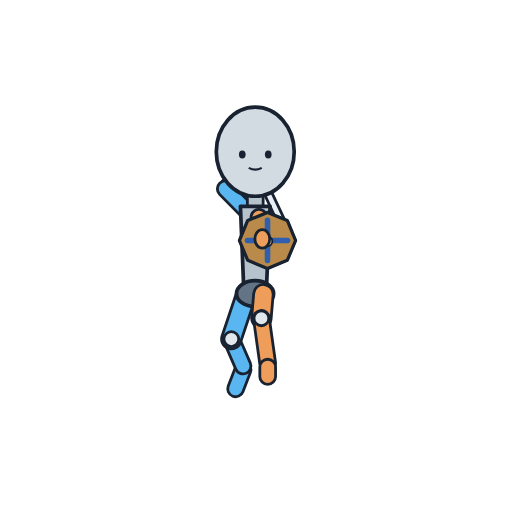
通常斬り（踏み込み振り下ろし）（12コマのうち4コマ目：溜め） 向き：正面（こちらを向く） このコマ：cocked: wrist bent back, the blade hangs down her back; the rear foot drives her on 添付の下絵のポーズで描いてください。下絵を保存

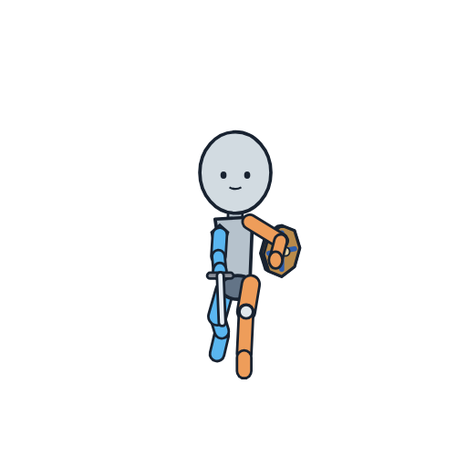
通常斬り（踏み込み振り下ろし）（12コマのうち7コマ目：命中） 向き：正面（こちらを向く） このコマ：impact (hit-stop): the wrist snaps - arm and blade one straight line; front knee deep, rear leg long 添付の下絵のポーズで描いてください。下絵を保存

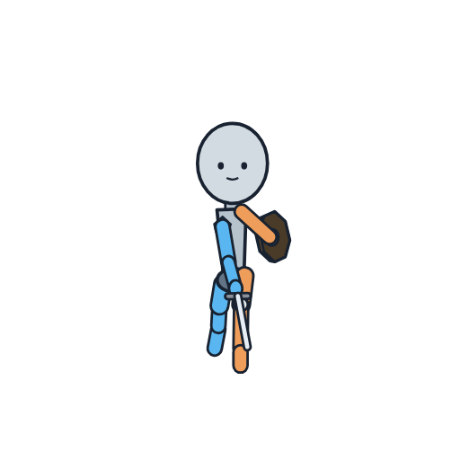
通常斬り（踏み込み振り下ろし）（12コマのうち8コマ目：振り抜き） 向き：正面（こちらを向く） このコマ：follow-through: the straight arm carries on right down to her front knee; the blade stays shallower than the arm (the wrist turns up) - cut through, not stuck in 添付の下絵のポーズで描いてください。下絵を保存

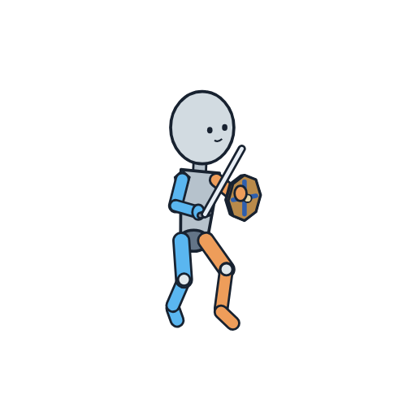
通常斬り（踏み込み振り下ろし）（12コマのうち1コマ目：構え） 向き：斜め前（体の正面が画面の右手前を向く） このコマ：guard: lead (shield) foot forward, wide stance, knees soft, blade up 添付の下絵のポーズで描いてください。下絵を保存

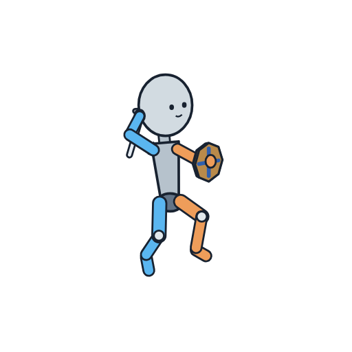
通常斬り（踏み込み振り下ろし）（12コマのうち4コマ目：溜め） 向き：斜め前（体の正面が画面の右手前を向く） このコマ：cocked: wrist bent back, the blade hangs down her back; the rear foot drives her on 添付の下絵のポーズで描いてください。下絵を保存

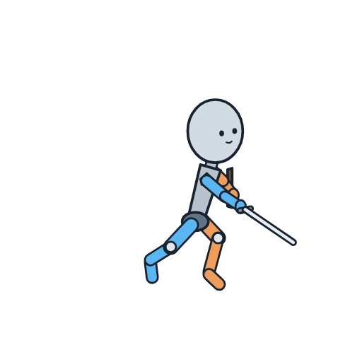
通常斬り（踏み込み振り下ろし）（12コマのうち7コマ目：命中） 向き：斜め前（体の正面が画面の右手前を向く） このコマ：impact (hit-stop): the wrist snaps - arm and blade one straight line; front knee deep, rear leg long 添付の下絵のポーズで描いてください。下絵を保存

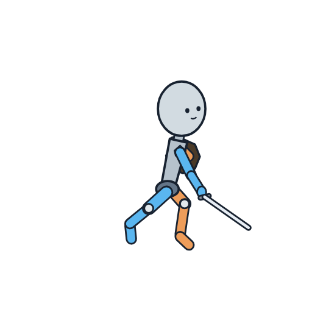
通常斬り（踏み込み振り下ろし）（12コマのうち8コマ目：振り抜き） 向き：斜め前（体の正面が画面の右手前を向く） このコマ：follow-through: the straight arm carries on right down to her front knee; the blade stays shallower than the arm (the wrist turns up) - cut through, not stuck in 添付の下絵のポーズで描いてください。下絵を保存

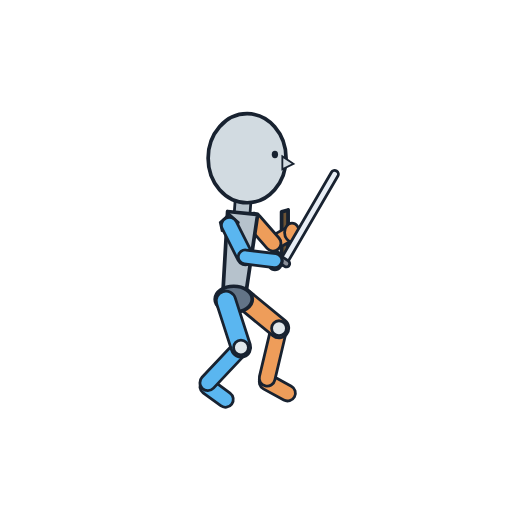
通常斬り（踏み込み振り下ろし）（12コマのうち1コマ目：構え） 向き：真横（画面の右を向く横顔） このコマ：guard: lead (shield) foot forward, wide stance, knees soft, blade up 添付の下絵のポーズで描いてください。下絵を保存

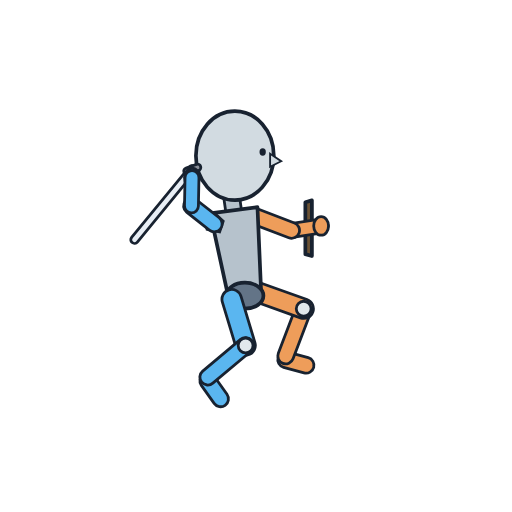
通常斬り（踏み込み振り下ろし）（12コマのうち4コマ目：溜め） 向き：真横（画面の右を向く横顔） このコマ：cocked: wrist bent back, the blade hangs down her back; the rear foot drives her on 添付の下絵のポーズで描いてください。下絵を保存

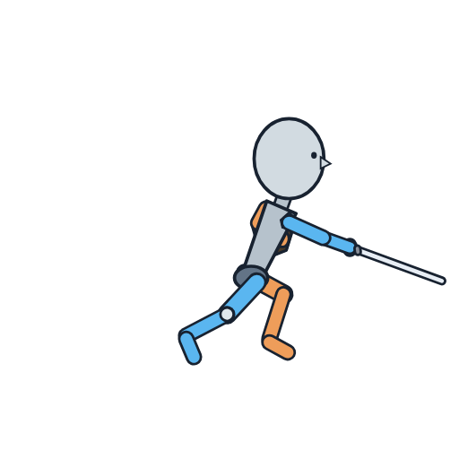
通常斬り（踏み込み振り下ろし）（12コマのうち7コマ目：命中） 向き：真横（画面の右を向く横顔） このコマ：impact (hit-stop): the wrist snaps - arm and blade one straight line; front knee deep, rear leg long 添付の下絵のポーズで描いてください。下絵を保存

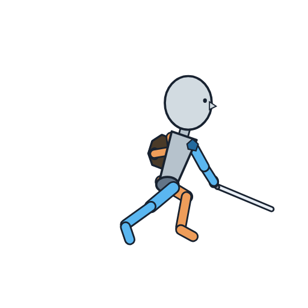
通常斬り（踏み込み振り下ろし）（12コマのうち8コマ目：振り抜き） 向き：真横（画面の右を向く横顔） このコマ：follow-through: the straight arm carries on right down to her front knee; the blade stays shallower than the arm (the wrist turns up) - cut through, not stuck in 添付の下絵のポーズで描いてください。下絵を保存

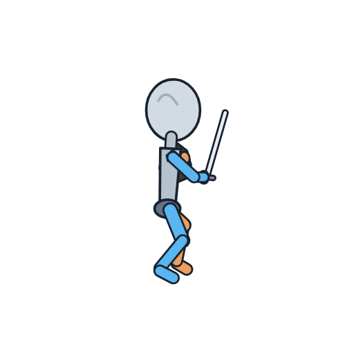
通常斬り（踏み込み振り下ろし）（12コマのうち1コマ目：構え） 向き：斜め後ろ（背中が見え、画面の右奥を向く） このコマ：guard: lead (shield) foot forward, wide stance, knees soft, blade up 添付の下絵のポーズで描いてください。下絵を保存

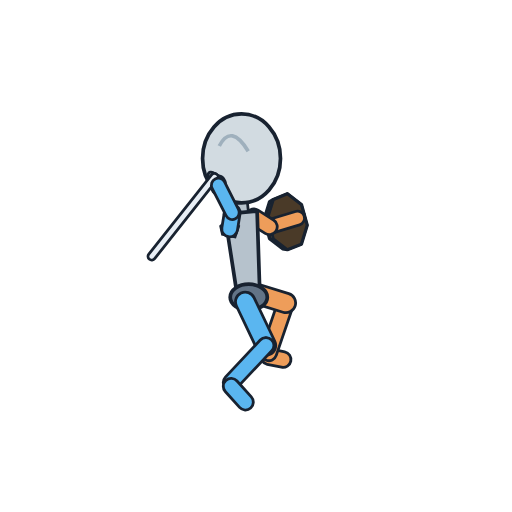
通常斬り（踏み込み振り下ろし）（12コマのうち4コマ目：溜め） 向き：斜め後ろ（背中が見え、画面の右奥を向く） このコマ：cocked: wrist bent back, the blade hangs down her back; the rear foot drives her on 添付の下絵のポーズで描いてください。下絵を保存

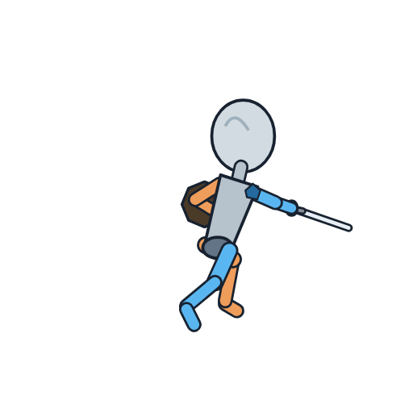
通常斬り（踏み込み振り下ろし）（12コマのうち7コマ目：命中） 向き：斜め後ろ（背中が見え、画面の右奥を向く） このコマ：impact (hit-stop): the wrist snaps - arm and blade one straight line; front knee deep, rear leg long 添付の下絵のポーズで描いてください。下絵を保存

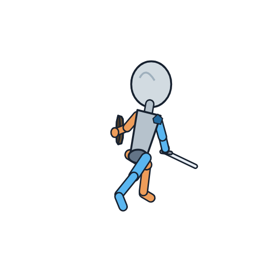
通常斬り（踏み込み振り下ろし）（12コマのうち8コマ目：振り抜き） 向き：斜め後ろ（背中が見え、画面の右奥を向く） このコマ：follow-through: the straight arm carries on right down to her front knee; the blade stays shallower than the arm (the wrist turns up) - cut through, not stuck in 添付の下絵のポーズで描いてください。下絵を保存

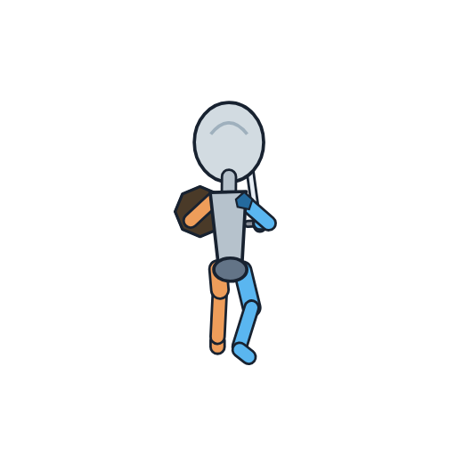
通常斬り（踏み込み振り下ろし）（12コマのうち1コマ目：構え） 向き：後ろ（背中） このコマ：guard: lead (shield) foot forward, wide stance, knees soft, blade up 添付の下絵のポーズで描いてください。下絵を保存

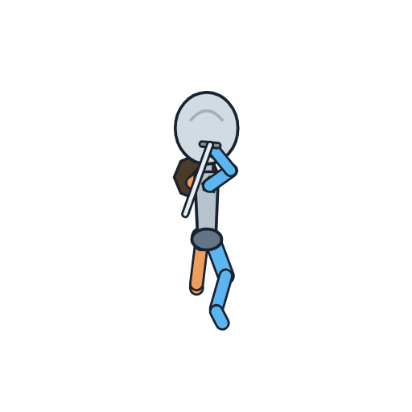
通常斬り（踏み込み振り下ろし）（12コマのうち4コマ目：溜め） 向き：後ろ（背中） このコマ：cocked: wrist bent back, the blade hangs down her back; the rear foot drives her on 添付の下絵のポーズで描いてください。下絵を保存

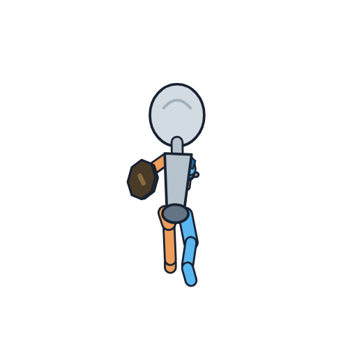
通常斬り（踏み込み振り下ろし）（12コマのうち7コマ目：命中） 向き：後ろ（背中） このコマ：impact (hit-stop): the wrist snaps - arm and blade one straight line; front knee deep, rear leg long 添付の下絵のポーズで描いてください。下絵を保存

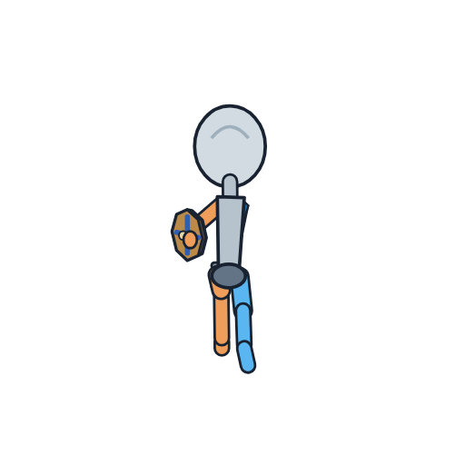
通常斬り（踏み込み振り下ろし）（12コマのうち8コマ目：振り抜き） 向き：後ろ（背中） このコマ：follow-through: the straight arm carries on right down to her front knee; the blade stays shallower than the arm (the wrist turns up) - cut through, not stuck in 添付の下絵のポーズで描いてください。下絵を保存

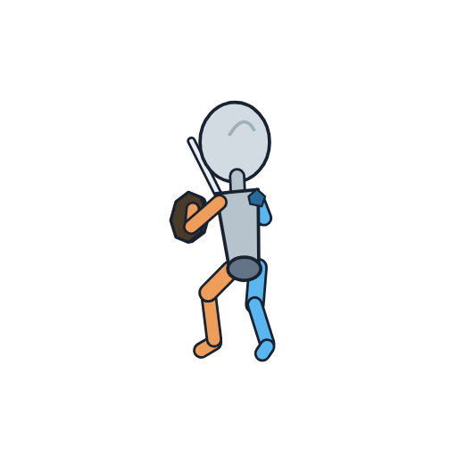
通常斬り（踏み込み振り下ろし）（12コマのうち1コマ目：構え） 向き：斜め後ろ（背中が見え、画面の左奥を向く） このコマ：guard: lead (shield) foot forward, wide stance, knees soft, blade up 添付の下絵のポーズで描いてください。下絵を保存

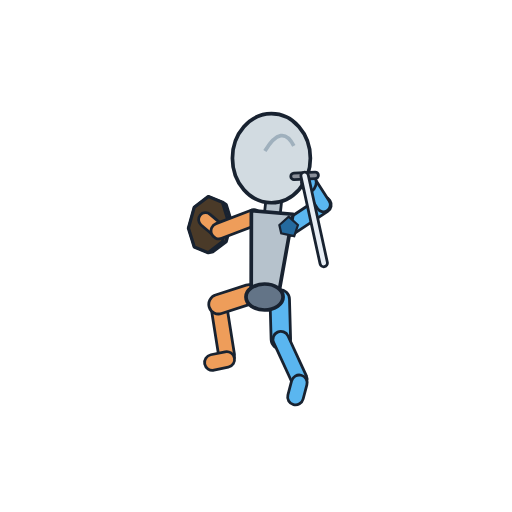
通常斬り（踏み込み振り下ろし）（12コマのうち4コマ目：溜め） 向き：斜め後ろ（背中が見え、画面の左奥を向く） このコマ：cocked: wrist bent back, the blade hangs down her back; the rear foot drives her on 添付の下絵のポーズで描いてください。下絵を保存

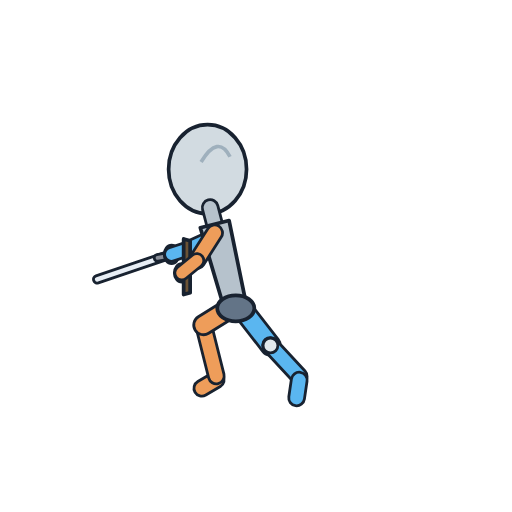
通常斬り（踏み込み振り下ろし）（12コマのうち7コマ目：命中） 向き：斜め後ろ（背中が見え、画面の左奥を向く） このコマ：impact (hit-stop): the wrist snaps - arm and blade one straight line; front knee deep, rear leg long 添付の下絵のポーズで描いてください。下絵を保存

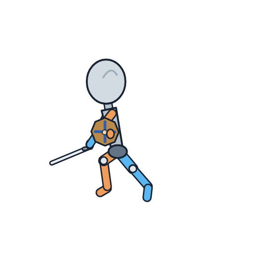
通常斬り（踏み込み振り下ろし）（12コマのうち8コマ目：振り抜き） 向き：斜め後ろ（背中が見え、画面の左奥を向く） このコマ：follow-through: the straight arm carries on right down to her front knee; the blade stays shallower than the arm (the wrist turns up) - cut through, not stuck in 添付の下絵のポーズで描いてください。下絵を保存

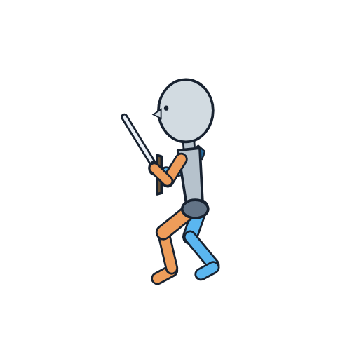
通常斬り（踏み込み振り下ろし）（12コマのうち1コマ目：構え） 向き：真横（画面の左を向く横顔） このコマ：guard: lead (shield) foot forward, wide stance, knees soft, blade up 添付の下絵のポーズで描いてください。下絵を保存

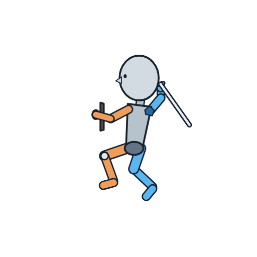
通常斬り（踏み込み振り下ろし）（12コマのうち4コマ目：溜め） 向き：真横（画面の左を向く横顔） このコマ：cocked: wrist bent back, the blade hangs down her back; the rear foot drives her on 添付の下絵のポーズで描いてください。下絵を保存

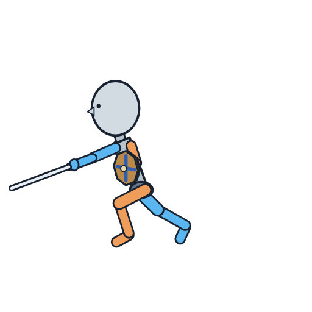
通常斬り（踏み込み振り下ろし）（12コマのうち7コマ目：命中） 向き：真横（画面の左を向く横顔） このコマ：impact (hit-stop): the wrist snaps - arm and blade one straight line; front knee deep, rear leg long 添付の下絵のポーズで描いてください。下絵を保存

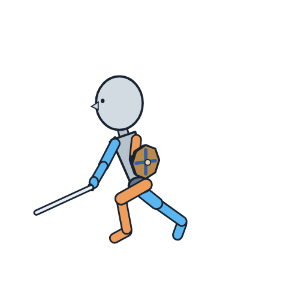
通常斬り（踏み込み振り下ろし）（12コマのうち8コマ目：振り抜き） 向き：真横（画面の左を向く横顔） このコマ：follow-through: the straight arm carries on right down to her front knee; the blade stays shallower than the arm (the wrist turns up) - cut through, not stuck in 添付の下絵のポーズで描いてください。下絵を保存

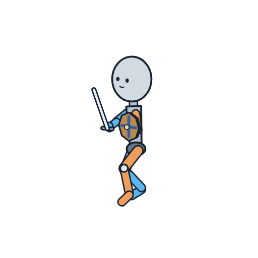
通常斬り（踏み込み振り下ろし）（12コマのうち1コマ目：構え） 向き：斜め前（体の正面が画面の左手前を向く） このコマ：guard: lead (shield) foot forward, wide stance, knees soft, blade up 添付の下絵のポーズで描いてください。下絵を保存

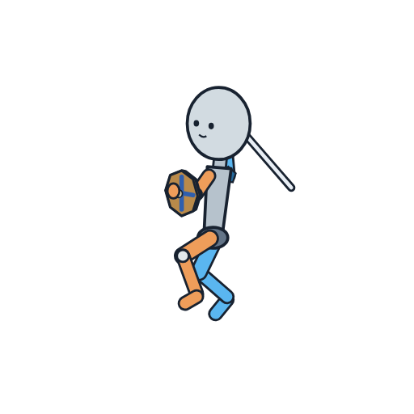
通常斬り（踏み込み振り下ろし）（12コマのうち4コマ目：溜め） 向き：斜め前（体の正面が画面の左手前を向く） このコマ：cocked: wrist bent back, the blade hangs down her back; the rear foot drives her on 添付の下絵のポーズで描いてください。下絵を保存

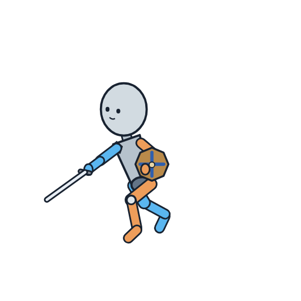
通常斬り（踏み込み振り下ろし）（12コマのうち7コマ目：命中） 向き：斜め前（体の正面が画面の左手前を向く） このコマ：impact (hit-stop): the wrist snaps - arm and blade one straight line; front knee deep, rear leg long 添付の下絵のポーズで描いてください。下絵を保存

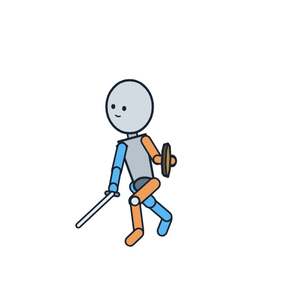
通常斬り（踏み込み振り下ろし）（12コマのうち8コマ目：振り抜き） 向き：斜め前（体の正面が画面の左手前を向く） このコマ：follow-through: the straight arm carries on right down to her front knee; the blade stays shallower than the arm (the wrist turns up) - cut through, not stuck in 添付の下絵のポーズで描いてください。下絵を保存

破城斬り（跳び上がって叩きつけ） 32コマ・heavy
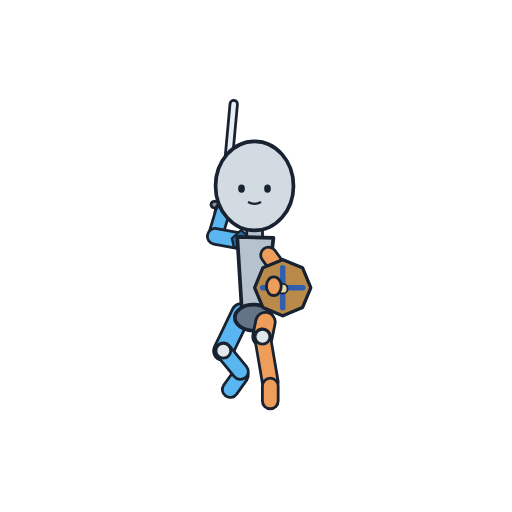
破城斬り（跳び上がって叩きつけ）（11コマのうち2コマ目：溜め） 向き：正面（こちらを向く） このコマ：deep crouch over the rear foot, blade drawn up and back 添付の下絵のポーズで描いてください。下絵を保存

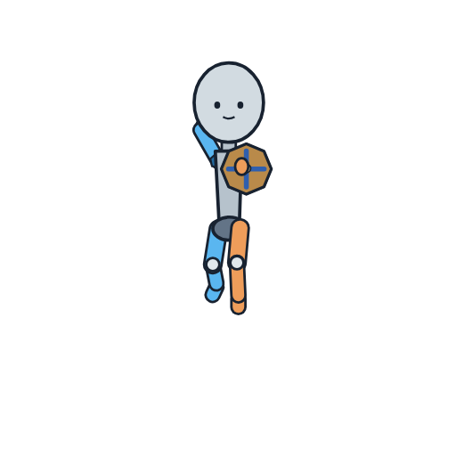
破城斬り（跳び上がって叩きつけ）（11コマのうち4コマ目：頂点） 向き：正面（こちらを向く） このコマ：apex: hangs in the air, bowed back, blade hanging down the back 添付の下絵のポーズで描いてください。下絵を保存

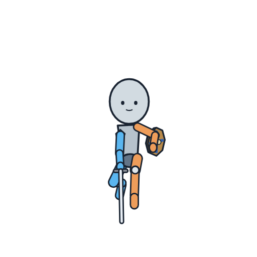
破城斬り（跳び上がって叩きつけ）（11コマのうち7コマ目：叩きつけ） 向き：正面（こちらを向く） このコマ：SLAM (hit): wrist snapped, blade driven into the floor 添付の下絵のポーズで描いてください。下絵を保存

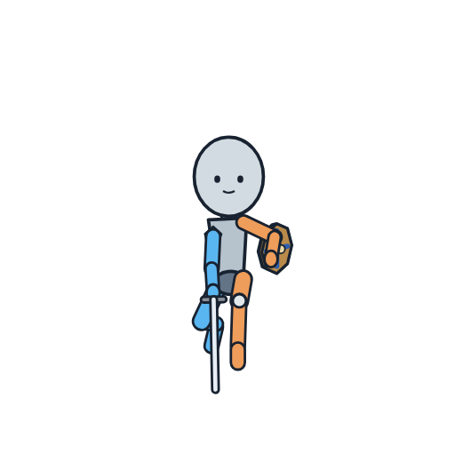
破城斬り（跳び上がって叩きつけ）（11コマのうち8コマ目：衝撃） 向き：正面（こちらを向く） このコマ：shock: holds while the floor cracks 添付の下絵のポーズで描いてください。下絵を保存

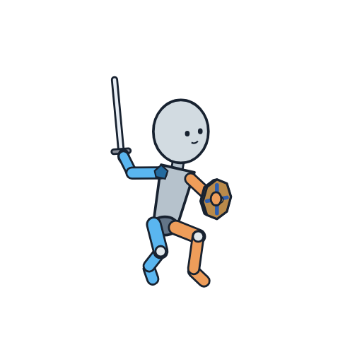
破城斬り（跳び上がって叩きつけ）（11コマのうち2コマ目：溜め） 向き：斜め前（体の正面が画面の右手前を向く） このコマ：deep crouch over the rear foot, blade drawn up and back 添付の下絵のポーズで描いてください。下絵を保存

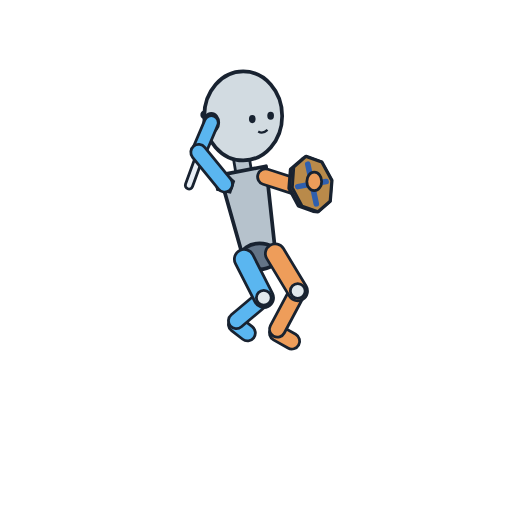
破城斬り（跳び上がって叩きつけ）（11コマのうち4コマ目：頂点） 向き：斜め前（体の正面が画面の右手前を向く） このコマ：apex: hangs in the air, bowed back, blade hanging down the back 添付の下絵のポーズで描いてください。下絵を保存

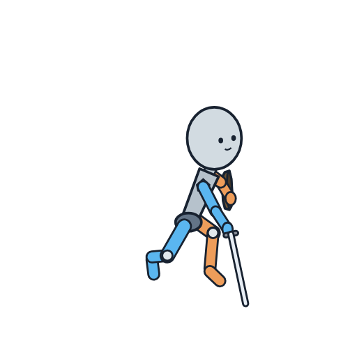
破城斬り（跳び上がって叩きつけ）（11コマのうち7コマ目：叩きつけ） 向き：斜め前（体の正面が画面の右手前を向く） このコマ：SLAM (hit): wrist snapped, blade driven into the floor 添付の下絵のポーズで描いてください。下絵を保存

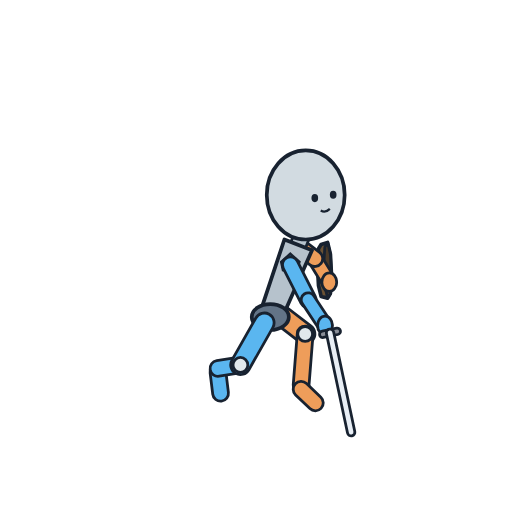
破城斬り（跳び上がって叩きつけ）（11コマのうち8コマ目：衝撃） 向き：斜め前（体の正面が画面の右手前を向く） このコマ：shock: holds while the floor cracks 添付の下絵のポーズで描いてください。下絵を保存

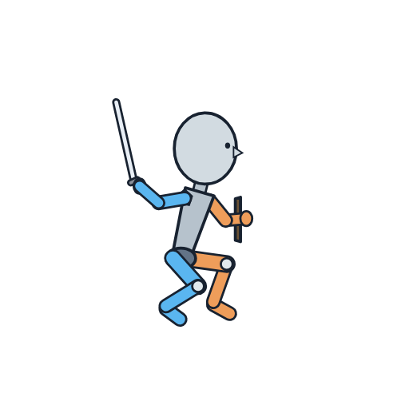
破城斬り（跳び上がって叩きつけ）（11コマのうち2コマ目：溜め） 向き：真横（画面の右を向く横顔） このコマ：deep crouch over the rear foot, blade drawn up and back 添付の下絵のポーズで描いてください。下絵を保存

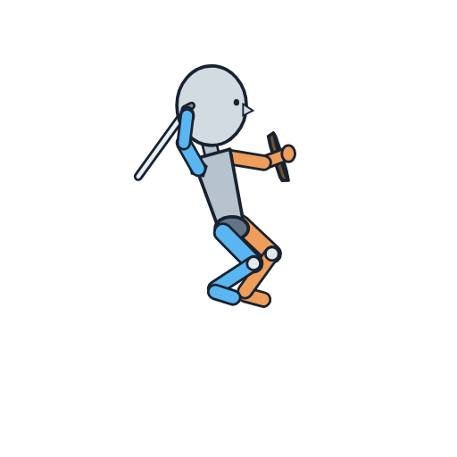
破城斬り（跳び上がって叩きつけ）（11コマのうち4コマ目：頂点） 向き：真横（画面の右を向く横顔） このコマ：apex: hangs in the air, bowed back, blade hanging down the back 添付の下絵のポーズで描いてください。下絵を保存

破城斬り（跳び上がって叩きつけ）（11コマのうち7コマ目：叩きつけ） 向き：真横（画面の右を向く横顔） このコマ：SLAM (hit): wrist snapped, blade driven into the floor 添付の下絵のポーズで描いてください。下絵を保存

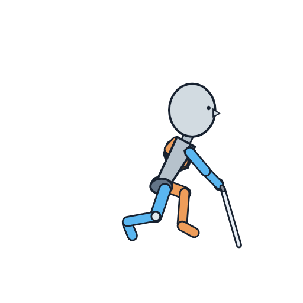
破城斬り（跳び上がって叩きつけ）（11コマのうち8コマ目：衝撃） 向き：真横（画面の右を向く横顔） このコマ：shock: holds while the floor cracks 添付の下絵のポーズで描いてください。下絵を保存

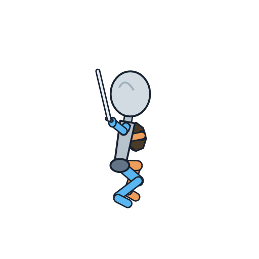
破城斬り（跳び上がって叩きつけ）（11コマのうち2コマ目：溜め） 向き：斜め後ろ（背中が見え、画面の右奥を向く） このコマ：deep crouch over the rear foot, blade drawn up and back 添付の下絵のポーズで描いてください。下絵を保存

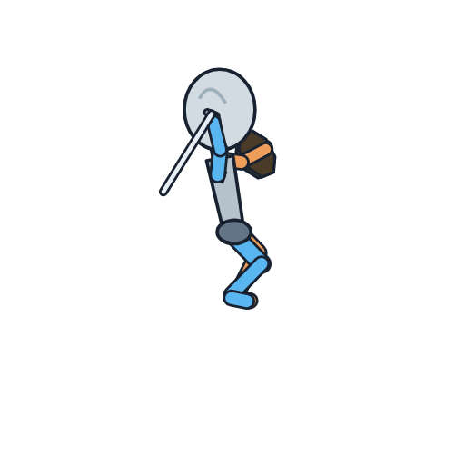
破城斬り（跳び上がって叩きつけ）（11コマのうち4コマ目：頂点） 向き：斜め後ろ（背中が見え、画面の右奥を向く） このコマ：apex: hangs in the air, bowed back, blade hanging down the back 添付の下絵のポーズで描いてください。下絵を保存

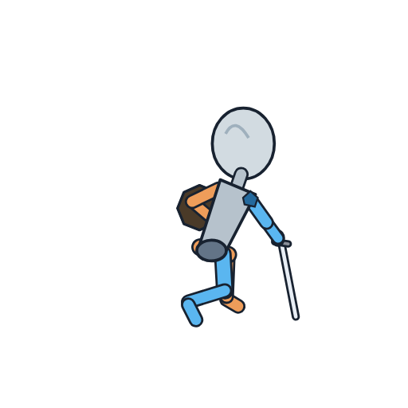
破城斬り（跳び上がって叩きつけ）（11コマのうち7コマ目：叩きつけ） 向き：斜め後ろ（背中が見え、画面の右奥を向く） このコマ：SLAM (hit): wrist snapped, blade driven into the floor 添付の下絵のポーズで描いてください。下絵を保存

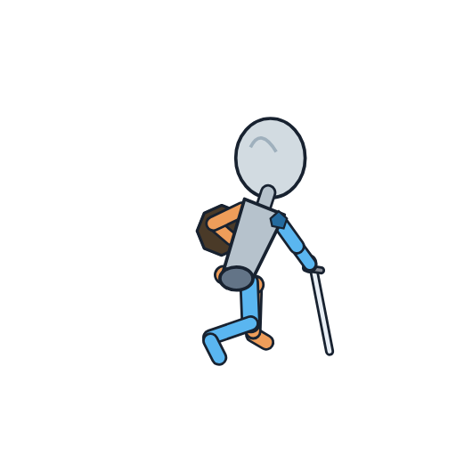
破城斬り（跳び上がって叩きつけ）（11コマのうち8コマ目：衝撃） 向き：斜め後ろ（背中が見え、画面の右奥を向く） このコマ：shock: holds while the floor cracks 添付の下絵のポーズで描いてください。下絵を保存

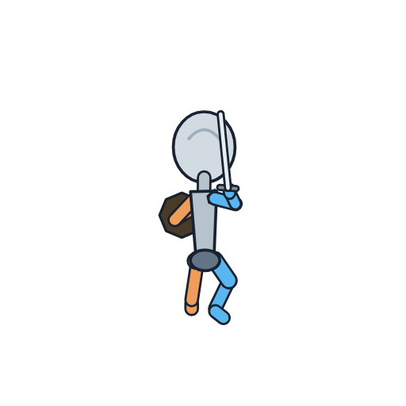
破城斬り（跳び上がって叩きつけ）（11コマのうち2コマ目：溜め） 向き：後ろ（背中） このコマ：deep crouch over the rear foot, blade drawn up and back 添付の下絵のポーズで描いてください。下絵を保存

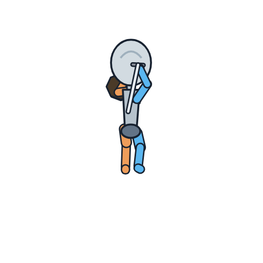
破城斬り（跳び上がって叩きつけ）（11コマのうち4コマ目：頂点） 向き：後ろ（背中） このコマ：apex: hangs in the air, bowed back, blade hanging down the back 添付の下絵のポーズで描いてください。下絵を保存

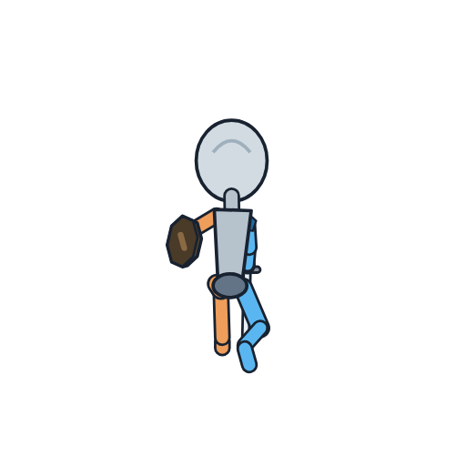
破城斬り（跳び上がって叩きつけ）（11コマのうち7コマ目：叩きつけ） 向き：後ろ（背中） このコマ：SLAM (hit): wrist snapped, blade driven into the floor 添付の下絵のポーズで描いてください。下絵を保存

破城斬り（跳び上がって叩きつけ）（11コマのうち8コマ目：衝撃） 向き：後ろ（背中） このコマ：shock: holds while the floor cracks 添付の下絵のポーズで描いてください。下絵を保存

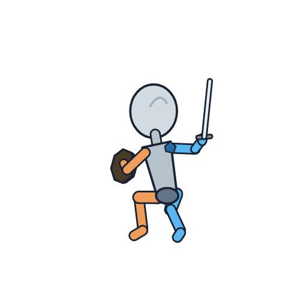
破城斬り（跳び上がって叩きつけ）（11コマのうち2コマ目：溜め） 向き：斜め後ろ（背中が見え、画面の左奥を向く） このコマ：deep crouch over the rear foot, blade drawn up and back 添付の下絵のポーズで描いてください。下絵を保存

破城斬り（跳び上がって叩きつけ）（11コマのうち4コマ目：頂点） 向き：斜め後ろ（背中が見え、画面の左奥を向く） このコマ：apex: hangs in the air, bowed back, blade hanging down the back 添付の下絵のポーズで描いてください。下絵を保存

破城斬り（跳び上がって叩きつけ）（11コマのうち7コマ目：叩きつけ） 向き：斜め後ろ（背中が見え、画面の左奥を向く） このコマ：SLAM (hit): wrist snapped, blade driven into the floor 添付の下絵のポーズで描いてください。下絵を保存

破城斬り（跳び上がって叩きつけ）（11コマのうち8コマ目：衝撃） 向き：斜め後ろ（背中が見え、画面の左奥を向く） このコマ：shock: holds while the floor cracks 添付の下絵のポーズで描いてください。下絵を保存

破城斬り（跳び上がって叩きつけ）（11コマのうち2コマ目：溜め） 向き：真横（画面の左を向く横顔） このコマ：deep crouch over the rear foot, blade drawn up and back 添付の下絵のポーズで描いてください。下絵を保存

破城斬り（跳び上がって叩きつけ）（11コマのうち4コマ目：頂点） 向き：真横（画面の左を向く横顔） このコマ：apex: hangs in the air, bowed back, blade hanging down the back 添付の下絵のポーズで描いてください。下絵を保存

破城斬り（跳び上がって叩きつけ）（11コマのうち7コマ目：叩きつけ） 向き：真横（画面の左を向く横顔） このコマ：SLAM (hit): wrist snapped, blade driven into the floor 添付の下絵のポーズで描いてください。下絵を保存

破城斬り（跳び上がって叩きつけ）（11コマのうち8コマ目：衝撃） 向き：真横（画面の左を向く横顔） このコマ：shock: holds while the floor cracks 添付の下絵のポーズで描いてください。下絵を保存

破城斬り（跳び上がって叩きつけ）（11コマのうち2コマ目：溜め） 向き：斜め前（体の正面が画面の左手前を向く） このコマ：deep crouch over the rear foot, blade drawn up and back 添付の下絵のポーズで描いてください。下絵を保存

破城斬り（跳び上がって叩きつけ）（11コマのうち4コマ目：頂点） 向き：斜め前（体の正面が画面の左手前を向く） このコマ：apex: hangs in the air, bowed back, blade hanging down the back 添付の下絵のポーズで描いてください。下絵を保存

破城斬り（跳び上がって叩きつけ）（11コマのうち7コマ目：叩きつけ） 向き：斜め前（体の正面が画面の左手前を向く） このコマ：SLAM (hit): wrist snapped, blade driven into the floor 添付の下絵のポーズで描いてください。下絵を保存

破城斬り（跳び上がって叩きつけ）（11コマのうち8コマ目：衝撃） 向き：斜め前（体の正面が画面の左手前を向く） このコマ：shock: holds while the floor cracks 添付の下絵のポーズで描いてください。下絵を保存

袈裟懸け（右上から左下への斜め斬り） 24コマ・kesa
袈裟懸け（右上から左下への斜め斬り）（12コマのうち4コマ目：溜め） 向き：正面（こちらを向く） このコマ：cocked: the blade hangs behind her right shoulder 添付の下絵のポーズで描いてください。下絵を保存

袈裟懸け（右上から左下への斜め斬り）（12コマのうち7コマ目：命中） 向き：正面（こちらを向く） このコマ：impact: wrist snapped, arm and blade in line, cutting down to her left 添付の下絵のポーズで描いてください。下絵を保存

袈裟懸け（右上から左下への斜め斬り）（12コマのうち8コマ目：振り抜き） 向き：正面（こちらを向く） このコマ：carried through to below her left hip 添付の下絵のポーズで描いてください。下絵を保存

袈裟懸け（右上から左下への斜め斬り）（12コマのうち4コマ目：溜め） 向き：斜め前（体の正面が画面の右手前を向く） このコマ：cocked: the blade hangs behind her right shoulder 添付の下絵のポーズで描いてください。下絵を保存

袈裟懸け（右上から左下への斜め斬り）（12コマのうち7コマ目：命中） 向き：斜め前（体の正面が画面の右手前を向く） このコマ：impact: wrist snapped, arm and blade in line, cutting down to her left 添付の下絵のポーズで描いてください。下絵を保存

袈裟懸け（右上から左下への斜め斬り）（12コマのうち8コマ目：振り抜き） 向き：斜め前（体の正面が画面の右手前を向く） このコマ：carried through to below her left hip 添付の下絵のポーズで描いてください。下絵を保存

袈裟懸け（右上から左下への斜め斬り）（12コマのうち4コマ目：溜め） 向き：真横（画面の右を向く横顔） このコマ：cocked: the blade hangs behind her right shoulder 添付の下絵のポーズで描いてください。下絵を保存

袈裟懸け（右上から左下への斜め斬り）（12コマのうち7コマ目：命中） 向き：真横（画面の右を向く横顔） このコマ：impact: wrist snapped, arm and blade in line, cutting down to her left 添付の下絵のポーズで描いてください。下絵を保存

袈裟懸け（右上から左下への斜め斬り）（12コマのうち8コマ目：振り抜き） 向き：真横（画面の右を向く横顔） このコマ：carried through to below her left hip 添付の下絵のポーズで描いてください。下絵を保存

袈裟懸け（右上から左下への斜め斬り）（12コマのうち4コマ目：溜め） 向き：斜め後ろ（背中が見え、画面の右奥を向く） このコマ：cocked: the blade hangs behind her right shoulder 添付の下絵のポーズで描いてください。下絵を保存


袈裟懸け（右上から左下への斜め斬り）（12コマのうち7コマ目：命中） 向き：斜め後ろ（背中が見え、画面の右奥を向く） このコマ：impact: wrist snapped, arm and blade in line, cutting down to her left 添付の下絵のポーズで描いてください。下絵を保存
袈裟懸け（右上から左下への斜め斬り）（12コマのうち8コマ目：振り抜き） 向き：斜め後ろ（背中が見え、画面の右奥を向く） このコマ：carried through to below her left hip 添付の下絵のポーズで描いてください。下絵を保存

袈裟懸け（右上から左下への斜め斬り）（12コマのうち4コマ目：溜め） 向き：後ろ（背中） このコマ：cocked: the blade hangs behind her right shoulder 添付の下絵のポーズで描いてください。下絵を保存

袈裟懸け（右上から左下への斜め斬り）（12コマのうち7コマ目：命中） 向き：後ろ（背中） このコマ：impact: wrist snapped, arm and blade in line, cutting down to her left 添付の下絵のポーズで描いてください。下絵を保存

袈裟懸け（右上から左下への斜め斬り）（12コマのうち8コマ目：振り抜き） 向き：後ろ（背中） このコマ：carried through to below her left hip 添付の下絵のポーズで描いてください。下絵を保存

袈裟懸け（右上から左下への斜め斬り）（12コマのうち4コマ目：溜め） 向き：斜め後ろ（背中が見え、画面の左奥を向く） このコマ：cocked: the blade hangs behind her right shoulder 添付の下絵のポーズで描いてください。下絵を保存

袈裟懸け（右上から左下への斜め斬り）（12コマのうち7コマ目：命中） 向き：斜め後ろ（背中が見え、画面の左奥を向く） このコマ：impact: wrist snapped, arm and blade in line, cutting down to her left 添付の下絵のポーズで描いてください。下絵を保存

袈裟懸け（右上から左下への斜め斬り）（12コマのうち8コマ目：振り抜き） 向き：斜め後ろ（背中が見え、画面の左奥を向く） このコマ：carried through to below her left hip 添付の下絵のポーズで描いてください。下絵を保存

袈裟懸け（右上から左下への斜め斬り）（12コマのうち4コマ目：溜め） 向き：真横（画面の左を向く横顔） このコマ：cocked: the blade hangs behind her right shoulder 添付の下絵のポーズで描いてください。下絵を保存

袈裟懸け（右上から左下への斜め斬り）（12コマのうち7コマ目：命中） 向き：真横（画面の左を向く横顔） このコマ：impact: wrist snapped, arm and blade in line, cutting down to her left 添付の下絵のポーズで描いてください。下絵を保存

袈裟懸け（右上から左下への斜め斬り）（12コマのうち8コマ目：振り抜き） 向き：真横（画面の左を向く横顔） このコマ：carried through to below her left hip 添付の下絵のポーズで描いてください。下絵を保存

袈裟懸け（右上から左下への斜め斬り）（12コマのうち4コマ目：溜め） 向き：斜め前（体の正面が画面の左手前を向く） このコマ：cocked: the blade hangs behind her right shoulder 添付の下絵のポーズで描いてください。下絵を保存

袈裟懸け（右上から左下への斜め斬り）（12コマのうち7コマ目：命中） 向き：斜め前（体の正面が画面の左手前を向く） このコマ：impact: wrist snapped, arm and blade in line, cutting down to her left 添付の下絵のポーズで描いてください。下絵を保存

袈裟懸け（右上から左下への斜め斬り）（12コマのうち8コマ目：振り抜き） 向き：斜め前（体の正面が画面の左手前を向く） このコマ：carried through to below her left hip 添付の下絵のポーズで描いてください。下絵を保存

横一文字（右から左への水平斬り） 24コマ・yoko
横一文字（右から左への水平斬り）（12コマのうち4コマ目：溜め） 向き：正面（こちらを向く） このコマ：cocked: the blade points straight back 添付の下絵のポーズで描いてください。下絵を保存

横一文字（右から左への水平斬り）（12コマのうち7コマ目：命中） 向き：正面（こちらを向く） このコマ：impact: blade level at her chest, in line with the arm 添付の下絵のポーズで描いてください。下絵を保存

横一文字（右から左への水平斬り）（12コマのうち8コマ目：振り抜き） 向き：正面（こちらを向く） このコマ：carried round to her left 添付の下絵のポーズで描いてください。下絵を保存

横一文字（右から左への水平斬り）（12コマのうち4コマ目：溜め） 向き：斜め前（体の正面が画面の右手前を向く） このコマ：cocked: the blade points straight back 添付の下絵のポーズで描いてください。下絵を保存

横一文字（右から左への水平斬り）（12コマのうち7コマ目：命中） 向き：斜め前（体の正面が画面の右手前を向く） このコマ：impact: blade level at her chest, in line with the arm 添付の下絵のポーズで描いてください。下絵を保存

横一文字（右から左への水平斬り）（12コマのうち8コマ目：振り抜き） 向き：斜め前（体の正面が画面の右手前を向く） このコマ：carried round to her left 添付の下絵のポーズで描いてください。下絵を保存

横一文字（右から左への水平斬り）（12コマのうち4コマ目：溜め） 向き：真横（画面の右を向く横顔） このコマ：cocked: the blade points straight back 添付の下絵のポーズで描いてください。下絵を保存

横一文字（右から左への水平斬り）（12コマのうち7コマ目：命中） 向き：真横（画面の右を向く横顔） このコマ：impact: blade level at her chest, in line with the arm 添付の下絵のポーズで描いてください。下絵を保存

横一文字（右から左への水平斬り）（12コマのうち8コマ目：振り抜き） 向き：真横（画面の右を向く横顔） このコマ：carried round to her left 添付の下絵のポーズで描いてください。下絵を保存

横一文字（右から左への水平斬り）（12コマのうち4コマ目：溜め） 向き：斜め後ろ（背中が見え、画面の右奥を向く） このコマ：cocked: the blade points straight back 添付の下絵のポーズで描いてください。下絵を保存

横一文字（右から左への水平斬り）（12コマのうち7コマ目：命中） 向き：斜め後ろ（背中が見え、画面の右奥を向く） このコマ：impact: blade level at her chest, in line with the arm 添付の下絵のポーズで描いてください。下絵を保存


横一文字（右から左への水平斬り）（12コマのうち8コマ目：振り抜き） 向き：斜め後ろ（背中が見え、画面の右奥を向く） このコマ：carried round to her left 添付の下絵のポーズで描いてください。下絵を保存
横一文字（右から左への水平斬り）（12コマのうち4コマ目：溜め） 向き：後ろ（背中） このコマ：cocked: the blade points straight back 添付の下絵のポーズで描いてください。下絵を保存

横一文字（右から左への水平斬り）（12コマのうち7コマ目：命中） 向き：後ろ（背中） このコマ：impact: blade level at her chest, in line with the arm 添付の下絵のポーズで描いてください。下絵を保存

横一文字（右から左への水平斬り）（12コマのうち8コマ目：振り抜き） 向き：後ろ（背中） このコマ：carried round to her left 添付の下絵のポーズで描いてください。下絵を保存

横一文字（右から左への水平斬り）（12コマのうち4コマ目：溜め） 向き：斜め後ろ（背中が見え、画面の左奥を向く） このコマ：cocked: the blade points straight back 添付の下絵のポーズで描いてください。下絵を保存

横一文字（右から左への水平斬り）（12コマのうち7コマ目：命中） 向き：斜め後ろ（背中が見え、画面の左奥を向く） このコマ：impact: blade level at her chest, in line with the arm 添付の下絵のポーズで描いてください。下絵を保存

横一文字（右から左への水平斬り）（12コマのうち8コマ目：振り抜き） 向き：斜め後ろ（背中が見え、画面の左奥を向く） このコマ：carried round to her left 添付の下絵のポーズで描いてください。下絵を保存

横一文字（右から左への水平斬り）（12コマのうち4コマ目：溜め） 向き：真横（画面の左を向く横顔） このコマ：cocked: the blade points straight back 添付の下絵のポーズで描いてください。下絵を保存

横一文字（右から左への水平斬り）（12コマのうち7コマ目：命中） 向き：真横（画面の左を向く横顔） このコマ：impact: blade level at her chest, in line with the arm 添付の下絵のポーズで描いてください。下絵を保存

横一文字（右から左への水平斬り）（12コマのうち8コマ目：振り抜き） 向き：真横（画面の左を向く横顔） このコマ：carried round to her left 添付の下絵のポーズで描いてください。下絵を保存

横一文字（右から左への水平斬り）（12コマのうち4コマ目：溜め） 向き：斜め前（体の正面が画面の左手前を向く） このコマ：cocked: the blade points straight back 添付の下絵のポーズで描いてください。下絵を保存

横一文字（右から左への水平斬り）（12コマのうち7コマ目：命中） 向き：斜め前（体の正面が画面の左手前を向く） このコマ：impact: blade level at her chest, in line with the arm 添付の下絵のポーズで描いてください。下絵を保存

横一文字（右から左への水平斬り）（12コマのうち8コマ目：振り抜き） 向き：斜め前（体の正面が画面の左手前を向く） このコマ：carried round to her left 添付の下絵のポーズで描いてください。下絵を保存

突き 16コマ・thrust
突き（9コマのうち3コマ目：溜め） 向き：正面（こちらを向く） このコマ：coil: weight back, lead foot lifts 添付の下絵のポーズで描いてください。下絵を保存

突き（9コマのうち5コマ目：命中） 向き：正面（こちらを向く） このコマ：full extension: arm and blade one line, rear leg straight, shield arm thrown back 添付の下絵のポーズで描いてください。下絵を保存

突き（9コマのうち3コマ目：溜め） 向き：斜め前（体の正面が画面の右手前を向く） このコマ：coil: weight back, lead foot lifts 添付の下絵のポーズで描いてください。下絵を保存

突き（9コマのうち5コマ目：命中） 向き：斜め前（体の正面が画面の右手前を向く） このコマ：full extension: arm and blade one line, rear leg straight, shield arm thrown back 添付の下絵のポーズで描いてください。下絵を保存

突き（9コマのうち3コマ目：溜め） 向き：真横（画面の右を向く横顔） このコマ：coil: weight back, lead foot lifts 添付の下絵のポーズで描いてください。下絵を保存

突き（9コマのうち5コマ目：命中） 向き：真横（画面の右を向く横顔） このコマ：full extension: arm and blade one line, rear leg straight, shield arm thrown back 添付の下絵のポーズで描いてください。下絵を保存

突き（9コマのうち3コマ目：溜め） 向き：斜め後ろ（背中が見え、画面の右奥を向く） このコマ：coil: weight back, lead foot lifts 添付の下絵のポーズで描いてください。下絵を保存


突き（9コマのうち5コマ目：命中） 向き：斜め後ろ（背中が見え、画面の右奥を向く） このコマ：full extension: arm and blade one line, rear leg straight, shield arm thrown back 添付の下絵のポーズで描いてください。下絵を保存
突き（9コマのうち3コマ目：溜め） 向き：後ろ（背中） このコマ：coil: weight back, lead foot lifts 添付の下絵のポーズで描いてください。下絵を保存

突き（9コマのうち5コマ目：命中） 向き：後ろ（背中） このコマ：full extension: arm and blade one line, rear leg straight, shield arm thrown back 添付の下絵のポーズで描いてください。下絵を保存

突き（9コマのうち3コマ目：溜め） 向き：斜め後ろ（背中が見え、画面の左奥を向く） このコマ：coil: weight back, lead foot lifts 添付の下絵のポーズで描いてください。下絵を保存

突き（9コマのうち5コマ目：命中） 向き：斜め後ろ（背中が見え、画面の左奥を向く） このコマ：full extension: arm and blade one line, rear leg straight, shield arm thrown back 添付の下絵のポーズで描いてください。下絵を保存

突き（9コマのうち3コマ目：溜め） 向き：真横（画面の左を向く横顔） このコマ：coil: weight back, lead foot lifts 添付の下絵のポーズで描いてください。下絵を保存

突き（9コマのうち5コマ目：命中） 向き：真横（画面の左を向く横顔） このコマ：full extension: arm and blade one line, rear leg straight, shield arm thrown back 添付の下絵のポーズで描いてください。下絵を保存

突き（9コマのうち3コマ目：溜め） 向き：斜め前（体の正面が画面の左手前を向く） このコマ：coil: weight back, lead foot lifts 添付の下絵のポーズで描いてください。下絵を保存

突き（9コマのうち5コマ目：命中） 向き：斜め前（体の正面が画面の左手前を向く） このコマ：full extension: arm and blade one line, rear leg straight, shield arm thrown back 添付の下絵のポーズで描いてください。下絵を保存

振りかぶったまま止まり、剣を下ろして目をそらす 16コマ・swing_abandon
振りかぶったまま止まり、剣を下ろして目をそらす（7コマのうち4コマ目：止まる） 向き：正面（こちらを向く） このコマ：it stops there: held over her head, trembling 添付の下絵のポーズで描いてください。下絵を保存

振りかぶったまま止まり、剣を下ろして目をそらす（7コマのうち6コマ目：目をそらす） 向き：正面（こちらを向く） このコマ：point down by her knee; she looks away 添付の下絵のポーズで描いてください。下絵を保存

振りかぶったまま止まり、剣を下ろして目をそらす（7コマのうち4コマ目：止まる） 向き：斜め前（体の正面が画面の右手前を向く） このコマ：it stops there: held over her head, trembling 添付の下絵のポーズで描いてください。下絵を保存

振りかぶったまま止まり、剣を下ろして目をそらす（7コマのうち6コマ目：目をそらす） 向き：斜め前（体の正面が画面の右手前を向く） このコマ：point down by her knee; she looks away 添付の下絵のポーズで描いてください。下絵を保存

振りかぶったまま止まり、剣を下ろして目をそらす（7コマのうち4コマ目：止まる） 向き：真横（画面の右を向く横顔） このコマ：it stops there: held over her head, trembling 添付の下絵のポーズで描いてください。下絵を保存

振りかぶったまま止まり、剣を下ろして目をそらす（7コマのうち6コマ目：目をそらす） 向き：真横（画面の右を向く横顔） このコマ：point down by her knee; she looks away 添付の下絵のポーズで描いてください。下絵を保存

振りかぶったまま止まり、剣を下ろして目をそらす（7コマのうち4コマ目：止まる） 向き：斜め後ろ（背中が見え、画面の右奥を向く） このコマ：it stops there: held over her head, trembling 添付の下絵のポーズで描いてください。下絵を保存

振りかぶったまま止まり、剣を下ろして目をそらす（7コマのうち6コマ目：目をそらす） 向き：斜め後ろ（背中が見え、画面の右奥を向く） このコマ：point down by her knee; she looks away 添付の下絵のポーズで描いてください。下絵を保存

振りかぶったまま止まり、剣を下ろして目をそらす（7コマのうち4コマ目：止まる） 向き：後ろ（背中） このコマ：it stops there: held over her head, trembling 添付の下絵のポーズで描いてください。下絵を保存

振りかぶったまま止まり、剣を下ろして目をそらす（7コマのうち6コマ目：目をそらす） 向き：後ろ（背中） このコマ：point down by her knee; she looks away 添付の下絵のポーズで描いてください。下絵を保存

振りかぶったまま止まり、剣を下ろして目をそらす（7コマのうち4コマ目：止まる） 向き：斜め後ろ（背中が見え、画面の左奥を向く） このコマ：it stops there: held over her head, trembling 添付の下絵のポーズで描いてください。下絵を保存

振りかぶったまま止まり、剣を下ろして目をそらす（7コマのうち6コマ目：目をそらす） 向き：斜め後ろ（背中が見え、画面の左奥を向く） このコマ：point down by her knee; she looks away 添付の下絵のポーズで描いてください。下絵を保存

振りかぶったまま止まり、剣を下ろして目をそらす（7コマのうち4コマ目：止まる） 向き：真横（画面の左を向く横顔） このコマ：it stops there: held over her head, trembling 添付の下絵のポーズで描いてください。下絵を保存

振りかぶったまま止まり、剣を下ろして目をそらす（7コマのうち6コマ目：目をそらす） 向き：真横（画面の左を向く横顔） このコマ：point down by her knee; she looks away 添付の下絵のポーズで描いてください。下絵を保存

振りかぶったまま止まり、剣を下ろして目をそらす（7コマのうち4コマ目：止まる） 向き：斜め前（体の正面が画面の左手前を向く） このコマ：it stops there: held over her head, trembling 添付の下絵のポーズで描いてください。下絵を保存

振りかぶったまま止まり、剣を下ろして目をそらす（7コマのうち6コマ目：目をそらす） 向き：斜め前（体の正面が画面の左手前を向く） このコマ：point down by her knee; she looks away 添付の下絵のポーズで描いてください。下絵を保存

斥候（シーフ） 77コマ
最初に1回だけ送る文（見た目の画像を添付）
添付する画像：scout-source.png（ゲームの8方向の絵）と、必要なら設定画 scout.jpg


これから、2Dゲームのキャラクターのアニメーション用の絵を、1コマずつお願いします。 ・添付の画像のキャラクター「斥候」を、同じ絵柄・同じ頭身（小さめのデフォルメ）・同じ衣装と色で描いてください。 ・持ち物と特徴：右手にナイフ。大きなバックパック（上に丸めた寝袋）を背負う。大きな狐の耳と尻尾。 ・毎回、ポーズの下絵（マネキンの図）を1枚添付します。姿勢・向き・手足と持ち物の位置は、下絵に合わせてください。 ・下絵の色の意味：青＝キャラクター本人の右半身、橙＝左半身、灰色＝胴と頭。下絵の線・色・関節の丸は描かないでください。 ・1回に1枚。正方形（1024×1024）。全身が入るように上下左右に1割くらいの余白をとり、立っているときの足元は、毎回、画像の下から1割くらいの高さにそろえてください。 ・背景は透明（できなければ真っ白の無地）。影・床・効果線・文字・枠は描かないでください。 ・動きの途中のコマでも、1枚の絵として自然に見えるように描いてください。 わかったら「OK」とだけ返してください。
1コマずつ送る文（そのコマのポーズの下絵を添付）
ナイフで素早く二連撃して跳び退く 27コマ・scout_knife_combo
ナイフで素早く二連撃して跳び退く（16コマのうち1コマ目：構え） 向き：正面（こちらを向く） このコマ：low guard, knife in the right hand 添付の下絵のポーズで描いてください。下絵を保存

ナイフで素早く二連撃して跳び退く（16コマのうち3コマ目：引き） 向き：正面（こちらを向く） このコマ：the knife hand draws back 添付の下絵のポーズで描いてください。下絵を保存

ナイフで素早く二連撃して跳び退く（16コマのうち7コマ目：一閃） 向き：正面（こちらを向く） このコマ：steps in: slashes across to her left 添付の下絵のポーズで描いてください。下絵を保存

ナイフで素早く二連撃して跳び退く（16コマのうち1コマ目：構え） 向き：斜め前（体の正面が画面の右手前を向く） このコマ：low guard, knife in the right hand 添付の下絵のポーズで描いてください。下絵を保存

ナイフで素早く二連撃して跳び退く（16コマのうち3コマ目：引き） 向き：斜め前（体の正面が画面の右手前を向く） このコマ：the knife hand draws back 添付の下絵のポーズで描いてください。下絵を保存

ナイフで素早く二連撃して跳び退く（16コマのうち7コマ目：一閃） 向き：斜め前（体の正面が画面の右手前を向く） このコマ：steps in: slashes across to her left 添付の下絵のポーズで描いてください。下絵を保存

ナイフで素早く二連撃して跳び退く（16コマのうち12コマ目：返し） 向き：斜め前（体の正面が画面の右手前を向く） このコマ：the backhand cut to her right 添付の下絵のポーズで描いてください。下絵を保存

ナイフで素早く二連撃して跳び退く（16コマのうち1コマ目：構え） 向き：真横（画面の右を向く横顔） このコマ：low guard, knife in the right hand 添付の下絵のポーズで描いてください。下絵を保存

ナイフで素早く二連撃して跳び退く（16コマのうち7コマ目：一閃） 向き：真横（画面の右を向く横顔） このコマ：steps in: slashes across to her left 添付の下絵のポーズで描いてください。下絵を保存

ナイフで素早く二連撃して跳び退く（16コマのうち12コマ目：返し） 向き：真横（画面の右を向く横顔） このコマ：the backhand cut to her right 添付の下絵のポーズで描いてください。下絵を保存

ナイフで素早く二連撃して跳び退く（16コマのうち1コマ目：構え） 向き：斜め後ろ（背中が見え、画面の右奥を向く） このコマ：low guard, knife in the right hand 添付の下絵のポーズで描いてください。下絵を保存

ナイフで素早く二連撃して跳び退く（16コマのうち7コマ目：一閃） 向き：斜め後ろ（背中が見え、画面の右奥を向く） このコマ：steps in: slashes across to her left 添付の下絵のポーズで描いてください。下絵を保存

ナイフで素早く二連撃して跳び退く（16コマのうち12コマ目：返し） 向き：斜め後ろ（背中が見え、画面の右奥を向く） このコマ：the backhand cut to her right 添付の下絵のポーズで描いてください。下絵を保存

ナイフで素早く二連撃して跳び退く（16コマのうち1コマ目：構え） 向き：後ろ（背中） このコマ：low guard, knife in the right hand 添付の下絵のポーズで描いてください。下絵を保存

ナイフで素早く二連撃して跳び退く（16コマのうち3コマ目：引き） 向き：後ろ（背中） このコマ：the knife hand draws back 添付の下絵のポーズで描いてください。下絵を保存

ナイフで素早く二連撃して跳び退く（16コマのうち7コマ目：一閃） 向き：後ろ（背中） このコマ：steps in: slashes across to her left 添付の下絵のポーズで描いてください。下絵を保存

ナイフで素早く二連撃して跳び退く（16コマのうち1コマ目：構え） 向き：斜め後ろ（背中が見え、画面の左奥を向く） このコマ：low guard, knife in the right hand 添付の下絵のポーズで描いてください。下絵を保存

ナイフで素早く二連撃して跳び退く（16コマのうち3コマ目：引き） 向き：斜め後ろ（背中が見え、画面の左奥を向く） このコマ：the knife hand draws back 添付の下絵のポーズで描いてください。下絵を保存

ナイフで素早く二連撃して跳び退く（16コマのうち7コマ目：一閃） 向き：斜め後ろ（背中が見え、画面の左奥を向く） このコマ：steps in: slashes across to her left 添付の下絵のポーズで描いてください。下絵を保存

ナイフで素早く二連撃して跳び退く（16コマのうち12コマ目：返し） 向き：斜め後ろ（背中が見え、画面の左奥を向く） このコマ：the backhand cut to her right 添付の下絵のポーズで描いてください。下絵を保存

ナイフで素早く二連撃して跳び退く（16コマのうち1コマ目：構え） 向き：真横（画面の左を向く横顔） このコマ：low guard, knife in the right hand 添付の下絵のポーズで描いてください。下絵を保存

ナイフで素早く二連撃して跳び退く（16コマのうち3コマ目：引き） 向き：真横（画面の左を向く横顔） このコマ：the knife hand draws back 添付の下絵のポーズで描いてください。下絵を保存

ナイフで素早く二連撃して跳び退く（16コマのうち7コマ目：一閃） 向き：真横（画面の左を向く横顔） このコマ：steps in: slashes across to her left 添付の下絵のポーズで描いてください。下絵を保存

ナイフで素早く二連撃して跳び退く（16コマのうち12コマ目：返し） 向き：真横（画面の左を向く横顔） このコマ：the backhand cut to her right 添付の下絵のポーズで描いてください。下絵を保存

ナイフで素早く二連撃して跳び退く（16コマのうち1コマ目：構え） 向き：斜め前（体の正面が画面の左手前を向く） このコマ：low guard, knife in the right hand 添付の下絵のポーズで描いてください。下絵を保存

ナイフで素早く二連撃して跳び退く（16コマのうち3コマ目：引き） 向き：斜め前（体の正面が画面の左手前を向く） このコマ：the knife hand draws back 添付の下絵のポーズで描いてください。下絵を保存

ナイフで素早く二連撃して跳び退く（16コマのうち12コマ目：返し） 向き：斜め前（体の正面が画面の左手前を向く） このコマ：the backhand cut to her right 添付の下絵のポーズで描いてください。下絵を保存

ナイフを投げる 24コマ・scout_throw
ナイフを投げる（19コマのうち7コマ目：振りかぶり） 向き：正面（こちらを向く） このコマ：the knife back behind her head, the other hand aims 添付の下絵のポーズで描いてください。下絵を保存

ナイフを投げる（19コマのうち14コマ目：投げる） 向き：正面（こちらを向く） このコマ：the throw: arm straight out, the knife gone 添付の下絵のポーズで描いてください。下絵を保存

ナイフを投げる（19コマのうち17コマ目：振り抜き） 向き：正面（こちらを向く） このコマ：follow-through 添付の下絵のポーズで描いてください。下絵を保存

ナイフを投げる（19コマのうち7コマ目：振りかぶり） 向き：斜め前（体の正面が画面の右手前を向く） このコマ：the knife back behind her head, the other hand aims 添付の下絵のポーズで描いてください。下絵を保存

ナイフを投げる（19コマのうち14コマ目：投げる） 向き：斜め前（体の正面が画面の右手前を向く） このコマ：the throw: arm straight out, the knife gone 添付の下絵のポーズで描いてください。下絵を保存

ナイフを投げる（19コマのうち17コマ目：振り抜き） 向き：斜め前（体の正面が画面の右手前を向く） このコマ：follow-through 添付の下絵のポーズで描いてください。下絵を保存

ナイフを投げる（19コマのうち7コマ目：振りかぶり） 向き：真横（画面の右を向く横顔） このコマ：the knife back behind her head, the other hand aims 添付の下絵のポーズで描いてください。下絵を保存

ナイフを投げる（19コマのうち14コマ目：投げる） 向き：真横（画面の右を向く横顔） このコマ：the throw: arm straight out, the knife gone 添付の下絵のポーズで描いてください。下絵を保存

ナイフを投げる（19コマのうち17コマ目：振り抜き） 向き：真横（画面の右を向く横顔） このコマ：follow-through 添付の下絵のポーズで描いてください。下絵を保存

ナイフを投げる（19コマのうち7コマ目：振りかぶり） 向き：斜め後ろ（背中が見え、画面の右奥を向く） このコマ：the knife back behind her head, the other hand aims 添付の下絵のポーズで描いてください。下絵を保存

ナイフを投げる（19コマのうち14コマ目：投げる） 向き：斜め後ろ（背中が見え、画面の右奥を向く） このコマ：the throw: arm straight out, the knife gone 添付の下絵のポーズで描いてください。下絵を保存

ナイフを投げる（19コマのうち17コマ目：振り抜き） 向き：斜め後ろ（背中が見え、画面の右奥を向く） このコマ：follow-through 添付の下絵のポーズで描いてください。下絵を保存

ナイフを投げる（19コマのうち7コマ目：振りかぶり） 向き：後ろ（背中） このコマ：the knife back behind her head, the other hand aims 添付の下絵のポーズで描いてください。下絵を保存

ナイフを投げる（19コマのうち14コマ目：投げる） 向き：後ろ（背中） このコマ：the throw: arm straight out, the knife gone 添付の下絵のポーズで描いてください。下絵を保存

ナイフを投げる（19コマのうち17コマ目：振り抜き） 向き：後ろ（背中） このコマ：follow-through 添付の下絵のポーズで描いてください。下絵を保存

ナイフを投げる（19コマのうち7コマ目：振りかぶり） 向き：斜め後ろ（背中が見え、画面の左奥を向く） このコマ：the knife back behind her head, the other hand aims 添付の下絵のポーズで描いてください。下絵を保存

ナイフを投げる（19コマのうち14コマ目：投げる） 向き：斜め後ろ（背中が見え、画面の左奥を向く） このコマ：the throw: arm straight out, the knife gone 添付の下絵のポーズで描いてください。下絵を保存

ナイフを投げる（19コマのうち17コマ目：振り抜き） 向き：斜め後ろ（背中が見え、画面の左奥を向く） このコマ：follow-through 添付の下絵のポーズで描いてください。下絵を保存

ナイフを投げる（19コマのうち7コマ目：振りかぶり） 向き：真横（画面の左を向く横顔） このコマ：the knife back behind her head, the other hand aims 添付の下絵のポーズで描いてください。下絵を保存

ナイフを投げる（19コマのうち14コマ目：投げる） 向き：真横（画面の左を向く横顔） このコマ：the throw: arm straight out, the knife gone 添付の下絵のポーズで描いてください。下絵を保存

ナイフを投げる（19コマのうち17コマ目：振り抜き） 向き：真横（画面の左を向く横顔） このコマ：follow-through 添付の下絵のポーズで描いてください。下絵を保存

ナイフを投げる（19コマのうち7コマ目：振りかぶり） 向き：斜め前（体の正面が画面の左手前を向く） このコマ：the knife back behind her head, the other hand aims 添付の下絵のポーズで描いてください。下絵を保存

ナイフを投げる（19コマのうち14コマ目：投げる） 向き：斜め前（体の正面が画面の左手前を向く） このコマ：the throw: arm straight out, the knife gone 添付の下絵のポーズで描いてください。下絵を保存

ナイフを投げる（19コマのうち17コマ目：振り抜き） 向き：斜め前（体の正面が画面の左手前を向く） このコマ：follow-through 添付の下絵のポーズで描いてください。下絵を保存

気配を察知して身を低くし、辺りをうかがう 3コマ・scout_sense
気配を察知して身を低くし、辺りをうかがう（12コマのうち1コマ目：立つ） 向き：正面（こちらを向く） このコマ：standing 添付の下絵のポーズで描いてください。下絵を保存

気配を察知して身を低くし、辺りをうかがう（12コマのうち5コマ目：うかがう） 向き：正面（こちらを向く） このコマ：drops low - feet close, one ahead, knees forward, the back heel up - a hand up (wait); looks one way 添付の下絵のポーズで描いてください。下絵を保存

気配を察知して身を低くし、辺りをうかがう（12コマのうち9コマ目：指す） 向き：正面（こちらを向く） このコマ：points to where it is 添付の下絵のポーズで描いてください。下絵を保存

片膝をついて罠を外す 2コマ・scout_disarm
片膝をついて罠を外す（8コマのうち1コマ目） 向き：正面（こちらを向く） このコマ：on one knee at the trap, both hands working at it close to the floor, the tail swaying 添付の下絵のポーズで描いてください。下絵を保存

片膝をついて罠を外す（8コマのうち3コマ目） 向き：正面（こちらを向く） このコマ：on one knee at the trap, both hands working at it close to the floor, the tail swaying 添付の下絵のポーズで描いてください。下絵を保存

背中のバックパックから品物を出して見せる（商人） 3コマ・scout_rummage
背中のバックパックから品物を出して見せる（商人）（16コマのうち1コマ目：立つ） 向き：斜め前（体の正面が画面の右手前を向く） 添付の下絵のポーズで描いてください。下絵を保存

背中のバックパックから品物を出して見せる（商人）（16コマのうち6コマ目：探る） 向き：斜め前（体の正面が画面の右手前を向く） このコマ：reaches back over her shoulder into the pack 添付の下絵のポーズで描いてください。下絵を保存

背中のバックパックから品物を出して見せる（商人）（16コマのうち12コマ目：見せる） 向き：斜め前（体の正面が画面の右手前を向く） このコマ：holds it out to show it, a small smile 添付の下絵のポーズで描いてください。下絵を保存

低く横へ跳んで身をかわす 13コマ・scout_sidestep
低く横へ跳んで身をかわす（8コマのうち4コマ目：跳ぶ） 向き：正面（こちらを向く） このコマ：springs sideways, low 添付の下絵のポーズで描いてください。下絵を保存

低く横へ跳んで身をかわす（8コマのうち6コマ目：着地） 向き：正面（こちらを向く） このコマ：lands low, the knife still up 添付の下絵のポーズで描いてください。下絵を保存

低く横へ跳んで身をかわす（8コマのうち4コマ目：跳ぶ） 向き：斜め前（体の正面が画面の右手前を向く） このコマ：springs sideways, low 添付の下絵のポーズで描いてください。下絵を保存

低く横へ跳んで身をかわす（8コマのうち6コマ目：着地） 向き：斜め前（体の正面が画面の右手前を向く） このコマ：lands low, the knife still up 添付の下絵のポーズで描いてください。下絵を保存

低く横へ跳んで身をかわす（8コマのうち4コマ目：跳ぶ） 向き：真横（画面の右を向く横顔） このコマ：springs sideways, low 添付の下絵のポーズで描いてください。下絵を保存

低く横へ跳んで身をかわす（8コマのうち4コマ目：跳ぶ） 向き：斜め後ろ（背中が見え、画面の右奥を向く） このコマ：springs sideways, low 添付の下絵のポーズで描いてください。下絵を保存

低く横へ跳んで身をかわす（8コマのうち6コマ目：着地） 向き：斜め後ろ（背中が見え、画面の右奥を向く） このコマ：lands low, the knife still up 添付の下絵のポーズで描いてください。下絵を保存

低く横へ跳んで身をかわす（8コマのうち4コマ目：跳ぶ） 向き：後ろ（背中） このコマ：springs sideways, low 添付の下絵のポーズで描いてください。下絵を保存

低く横へ跳んで身をかわす（8コマのうち6コマ目：着地） 向き：後ろ（背中） このコマ：lands low, the knife still up 添付の下絵のポーズで描いてください。下絵を保存

低く横へ跳んで身をかわす（8コマのうち4コマ目：跳ぶ） 向き：斜め後ろ（背中が見え、画面の左奥を向く） このコマ：springs sideways, low 添付の下絵のポーズで描いてください。下絵を保存

低く横へ跳んで身をかわす（8コマのうち6コマ目：着地） 向き：斜め後ろ（背中が見え、画面の左奥を向く） このコマ：lands low, the knife still up 添付の下絵のポーズで描いてください。下絵を保存

低く横へ跳んで身をかわす（8コマのうち4コマ目：跳ぶ） 向き：斜め前（体の正面が画面の左手前を向く） このコマ：springs sideways, low 添付の下絵のポーズで描いてください。下絵を保存

低く横へ跳んで身をかわす（8コマのうち6コマ目：着地） 向き：斜め前（体の正面が画面の左手前を向く） このコマ：lands low, the knife still up 添付の下絵のポーズで描いてください。下絵を保存

身を低くして駆け込み、足を滑らせて止まる 4コマ・scout_dash_stop
身を低くして駆け込み、足を滑らせて止まる（10コマのうち1コマ目：駆ける） 向き：真横（画面の右を向く横顔） このコマ：a long low stride 添付の下絵のポーズで描いてください。下絵を保存

身を低くして駆け込み、足を滑らせて止まる（10コマのうち5コマ目：滑る） 向き：真横（画面の右を向く横顔） このコマ：the lead foot plants and slides, body leaning back 添付の下絵のポーズで描いてください。下絵を保存

身を低くして駆け込み、足を滑らせて止まる（10コマのうち8コマ目：止まる） 向き：真横（画面の右を向く横顔） このコマ：stops low, one hand near the floor 添付の下絵のポーズで描いてください。下絵を保存

身を低くして駆け込み、足を滑らせて止まる（10コマのうち10コマ目：立つ） 向き：真横（画面の右を向く横顔） このコマ：standing, feet together under her 添付の下絵のポーズで描いてください。下絵を保存

バックパックの肩ひもを引き上げて背負い直す（待機の仕草） 1コマ・scout_pack_adjust
バックパックの肩ひもを引き上げて背負い直す（待機の仕草）（11コマのうち4コマ目：つかむ） 向き：斜め前（体の正面が画面の右手前を向く） このコマ：hands on both straps 添付の下絵のポーズで描いてください。下絵を保存

魔法使い 55コマ
最初に1回だけ送る文（見た目の画像を添付）
添付する画像：witch-source.png（ゲームの8方向の絵）と、必要なら設定画 witch-reference.jpg


これから、2Dゲームのキャラクターのアニメーション用の絵を、1コマずつお願いします。 ・添付の画像のキャラクター「魔法使い」を、同じ絵柄・同じ頭身（小さめのデフォルメ）・同じ衣装と色で描いてください。 ・持ち物と特徴：右手に紫の宝珠の杖。両腕の肘から先は金属の義腕。大きなとんがり帽子。 ・毎回、ポーズの下絵（マネキンの図）を1枚添付します。姿勢・向き・手足と持ち物の位置は、下絵に合わせてください。 ・下絵の色の意味：青＝キャラクター本人の右半身、橙＝左半身、灰色＝胴と頭。下絵の線・色・関節の丸は描かないでください。 ・1回に1枚。正方形（1024×1024）。全身が入るように上下左右に1割くらいの余白をとり、立っているときの足元は、毎回、画像の下から1割くらいの高さにそろえてください。 ・背景は透明（できなければ真っ白の無地）。影・床・効果線・文字・枠は描かないでください。 ・動きの途中のコマでも、1枚の絵として自然に見えるように描いてください。 わかったら「OK」とだけ返してください。
1コマずつ送る文（そのコマのポーズの下絵を添付）
機械の腕を向けて魔力の弾を放つ 24コマ・mage_bolt
機械の腕を向けて魔力の弾を放つ（12コマのうち1コマ目：立つ） 向き：正面（こちらを向く） このコマ：the staff upright in the right hand 添付の下絵のポーズで描いてください。下絵を保存

機械の腕を向けて魔力の弾を放つ（12コマのうち4コマ目：集める） 向き：正面（こちらを向く） このコマ：the mechanical left arm comes up bent, gathering 添付の下絵のポーズで描いてください。下絵を保存

機械の腕を向けて魔力の弾を放つ（12コマのうち6コマ目：狙う） 向き：正面（こちらを向く） このコマ：the arm straight at the target 添付の下絵のポーズで描いてください。下絵を保存

機械の腕を向けて魔力の弾を放つ（12コマのうち1コマ目：立つ） 向き：斜め前（体の正面が画面の右手前を向く） このコマ：the staff upright in the right hand 添付の下絵のポーズで描いてください。下絵を保存

機械の腕を向けて魔力の弾を放つ（12コマのうち4コマ目：集める） 向き：斜め前（体の正面が画面の右手前を向く） このコマ：the mechanical left arm comes up bent, gathering 添付の下絵のポーズで描いてください。下絵を保存

機械の腕を向けて魔力の弾を放つ（12コマのうち7コマ目：放つ） 向き：斜め前（体の正面が画面の右手前を向く） このコマ：the shot: the arm kicks up 添付の下絵のポーズで描いてください。下絵を保存

機械の腕を向けて魔力の弾を放つ（12コマのうち1コマ目：立つ） 向き：真横（画面の右を向く横顔） このコマ：the staff upright in the right hand 添付の下絵のポーズで描いてください。下絵を保存

機械の腕を向けて魔力の弾を放つ（12コマのうち4コマ目：集める） 向き：真横（画面の右を向く横顔） このコマ：the mechanical left arm comes up bent, gathering 添付の下絵のポーズで描いてください。下絵を保存

機械の腕を向けて魔力の弾を放つ（12コマのうち6コマ目：狙う） 向き：真横（画面の右を向く横顔） このコマ：the arm straight at the target 添付の下絵のポーズで描いてください。下絵を保存

機械の腕を向けて魔力の弾を放つ（12コマのうち1コマ目：立つ） 向き：斜め後ろ（背中が見え、画面の右奥を向く） このコマ：the staff upright in the right hand 添付の下絵のポーズで描いてください。下絵を保存

機械の腕を向けて魔力の弾を放つ（12コマのうち4コマ目：集める） 向き：斜め後ろ（背中が見え、画面の右奥を向く） このコマ：the mechanical left arm comes up bent, gathering 添付の下絵のポーズで描いてください。下絵を保存

機械の腕を向けて魔力の弾を放つ（12コマのうち6コマ目：狙う） 向き：斜め後ろ（背中が見え、画面の右奥を向く） このコマ：the arm straight at the target 添付の下絵のポーズで描いてください。下絵を保存

機械の腕を向けて魔力の弾を放つ（12コマのうち1コマ目：立つ） 向き：後ろ（背中） このコマ：the staff upright in the right hand 添付の下絵のポーズで描いてください。下絵を保存

機械の腕を向けて魔力の弾を放つ（12コマのうち4コマ目：集める） 向き：後ろ（背中） このコマ：the mechanical left arm comes up bent, gathering 添付の下絵のポーズで描いてください。下絵を保存

機械の腕を向けて魔力の弾を放つ（12コマのうち6コマ目：狙う） 向き：後ろ（背中） このコマ：the arm straight at the target 添付の下絵のポーズで描いてください。下絵を保存

機械の腕を向けて魔力の弾を放つ（12コマのうち1コマ目：立つ） 向き：斜め後ろ（背中が見え、画面の左奥を向く） このコマ：the staff upright in the right hand 添付の下絵のポーズで描いてください。下絵を保存

機械の腕を向けて魔力の弾を放つ（12コマのうち4コマ目：集める） 向き：斜め後ろ（背中が見え、画面の左奥を向く） このコマ：the mechanical left arm comes up bent, gathering 添付の下絵のポーズで描いてください。下絵を保存

機械の腕を向けて魔力の弾を放つ（12コマのうち6コマ目：狙う） 向き：斜め後ろ（背中が見え、画面の左奥を向く） このコマ：the arm straight at the target 添付の下絵のポーズで描いてください。下絵を保存

機械の腕を向けて魔力の弾を放つ（12コマのうち1コマ目：立つ） 向き：真横（画面の左を向く横顔） このコマ：the staff upright in the right hand 添付の下絵のポーズで描いてください。下絵を保存

機械の腕を向けて魔力の弾を放つ（12コマのうち4コマ目：集める） 向き：真横（画面の左を向く横顔） このコマ：the mechanical left arm comes up bent, gathering 添付の下絵のポーズで描いてください。下絵を保存

機械の腕を向けて魔力の弾を放つ（12コマのうち6コマ目：狙う） 向き：真横（画面の左を向く横顔） このコマ：the arm straight at the target 添付の下絵のポーズで描いてください。下絵を保存

機械の腕を向けて魔力の弾を放つ（12コマのうち1コマ目：立つ） 向き：斜め前（体の正面が画面の左手前を向く） このコマ：the staff upright in the right hand 添付の下絵のポーズで描いてください。下絵を保存

機械の腕を向けて魔力の弾を放つ（12コマのうち4コマ目：集める） 向き：斜め前（体の正面が画面の左手前を向く） このコマ：the mechanical left arm comes up bent, gathering 添付の下絵のポーズで描いてください。下絵を保存

機械の腕を向けて魔力の弾を放つ（12コマのうち6コマ目：狙う） 向き：斜め前（体の正面が画面の左手前を向く） このコマ：the arm straight at the target 添付の下絵のポーズで描いてください。下絵を保存

杖と腕を掲げて溜め、振り下ろして範囲魔法 16コマ・mage_area
杖と腕を掲げて溜め、振り下ろして範囲魔法（18コマのうち6コマ目：掲げる） 向き：正面（こちらを向く） このコマ：the staff and the left arm raised high 添付の下絵のポーズで描いてください。下絵を保存

杖と腕を掲げて溜め、振り下ろして範囲魔法（18コマのうち14コマ目：振り下ろす） 向き：正面（こちらを向く） このコマ：the staff comes down to the floor ahead, the arm sweeps out 添付の下絵のポーズで描いてください。下絵を保存

杖と腕を掲げて溜め、振り下ろして範囲魔法（18コマのうち6コマ目：掲げる） 向き：斜め前（体の正面が画面の右手前を向く） このコマ：the staff and the left arm raised high 添付の下絵のポーズで描いてください。下絵を保存

杖と腕を掲げて溜め、振り下ろして範囲魔法（18コマのうち14コマ目：振り下ろす） 向き：斜め前（体の正面が画面の右手前を向く） このコマ：the staff comes down to the floor ahead, the arm sweeps out 添付の下絵のポーズで描いてください。下絵を保存

杖と腕を掲げて溜め、振り下ろして範囲魔法（18コマのうち6コマ目：掲げる） 向き：真横（画面の右を向く横顔） このコマ：the staff and the left arm raised high 添付の下絵のポーズで描いてください。下絵を保存

杖と腕を掲げて溜め、振り下ろして範囲魔法（18コマのうち14コマ目：振り下ろす） 向き：真横（画面の右を向く横顔） このコマ：the staff comes down to the floor ahead, the arm sweeps out 添付の下絵のポーズで描いてください。下絵を保存

杖と腕を掲げて溜め、振り下ろして範囲魔法（18コマのうち6コマ目：掲げる） 向き：斜め後ろ（背中が見え、画面の右奥を向く） このコマ：the staff and the left arm raised high 添付の下絵のポーズで描いてください。下絵を保存

杖と腕を掲げて溜め、振り下ろして範囲魔法（18コマのうち14コマ目：振り下ろす） 向き：斜め後ろ（背中が見え、画面の右奥を向く） このコマ：the staff comes down to the floor ahead, the arm sweeps out 添付の下絵のポーズで描いてください。下絵を保存

杖と腕を掲げて溜め、振り下ろして範囲魔法（18コマのうち6コマ目：掲げる） 向き：後ろ（背中） このコマ：the staff and the left arm raised high 添付の下絵のポーズで描いてください。下絵を保存

杖と腕を掲げて溜め、振り下ろして範囲魔法（18コマのうち14コマ目：振り下ろす） 向き：後ろ（背中） このコマ：the staff comes down to the floor ahead, the arm sweeps out 添付の下絵のポーズで描いてください。下絵を保存

杖と腕を掲げて溜め、振り下ろして範囲魔法（18コマのうち6コマ目：掲げる） 向き：斜め後ろ（背中が見え、画面の左奥を向く） このコマ：the staff and the left arm raised high 添付の下絵のポーズで描いてください。下絵を保存

杖と腕を掲げて溜め、振り下ろして範囲魔法（18コマのうち14コマ目：振り下ろす） 向き：斜め後ろ（背中が見え、画面の左奥を向く） このコマ：the staff comes down to the floor ahead, the arm sweeps out 添付の下絵のポーズで描いてください。下絵を保存

杖と腕を掲げて溜め、振り下ろして範囲魔法（18コマのうち6コマ目：掲げる） 向き：真横（画面の左を向く横顔） このコマ：the staff and the left arm raised high 添付の下絵のポーズで描いてください。下絵を保存

杖と腕を掲げて溜め、振り下ろして範囲魔法（18コマのうち14コマ目：振り下ろす） 向き：真横（画面の左を向く横顔） このコマ：the staff comes down to the floor ahead, the arm sweeps out 添付の下絵のポーズで描いてください。下絵を保存

杖と腕を掲げて溜め、振り下ろして範囲魔法（18コマのうち6コマ目：掲げる） 向き：斜め前（体の正面が画面の左手前を向く） このコマ：the staff and the left arm raised high 添付の下絵のポーズで描いてください。下絵を保存

杖と腕を掲げて溜め、振り下ろして範囲魔法（18コマのうち14コマ目：振り下ろす） 向き：斜め前（体の正面が画面の左手前を向く） このコマ：the staff comes down to the floor ahead, the arm sweeps out 添付の下絵のポーズで描いてください。下絵を保存

腕を向けたまま魔力を流し続ける 2コマ・mage_channel
腕を向けたまま魔力を流し続ける（8コマのうち1コマ目） 向き：真横（画面の右を向く横顔） このコマ：the arm held out, a slight tremble as the power runs through it; the coat stirs 添付の下絵のポーズで描いてください。下絵を保存

腕を向けたまま魔力を流し続ける（8コマのうち4コマ目） 向き：真横（画面の右を向く横顔） このコマ：the arm held out, a slight tremble as the power runs through it; the coat stirs 添付の下絵のポーズで描いてください。下絵を保存

義腕の手のひらを向けて障壁を張る 8コマ・mage_barrier
義腕の手のひらを向けて障壁を張る（10コマのうち5コマ目：かざす） 向き：正面（こちらを向く） このコマ：the mechanical palm comes up toward the threat 添付の下絵のポーズで描いてください。下絵を保存

義腕の手のひらを向けて障壁を張る（10コマのうち5コマ目：かざす） 向き：斜め前（体の正面が画面の右手前を向く） このコマ：the mechanical palm comes up toward the threat 添付の下絵のポーズで描いてください。下絵を保存

義腕の手のひらを向けて障壁を張る（10コマのうち5コマ目：かざす） 向き：真横（画面の右を向く横顔） このコマ：the mechanical palm comes up toward the threat 添付の下絵のポーズで描いてください。下絵を保存

義腕の手のひらを向けて障壁を張る（10コマのうち5コマ目：かざす） 向き：斜め後ろ（背中が見え、画面の右奥を向く） このコマ：the mechanical palm comes up toward the threat 添付の下絵のポーズで描いてください。下絵を保存

義腕の手のひらを向けて障壁を張る（10コマのうち5コマ目：かざす） 向き：後ろ（背中） このコマ：the mechanical palm comes up toward the threat 添付の下絵のポーズで描いてください。下絵を保存

義腕の手のひらを向けて障壁を張る（10コマのうち5コマ目：かざす） 向き：斜め後ろ（背中が見え、画面の左奥を向く） このコマ：the mechanical palm comes up toward the threat 添付の下絵のポーズで描いてください。下絵を保存

義腕の手のひらを向けて障壁を張る（10コマのうち5コマ目：かざす） 向き：真横（画面の左を向く横顔） このコマ：the mechanical palm comes up toward the threat 添付の下絵のポーズで描いてください。下絵を保存

義腕の手のひらを向けて障壁を張る（10コマのうち5コマ目：かざす） 向き：斜め前（体の正面が画面の左手前を向く） このコマ：the mechanical palm comes up toward the threat 添付の下絵のポーズで描いてください。下絵を保存

撃ちすぎて熱をもった義腕を振って冷ます 2コマ・mage_overheat
撃ちすぎて熱をもった義腕を振って冷ます（12コマのうち1コマ目：見る） 向き：正面（こちらを向く） このコマ：looks at the hot arm, steam venting from it 添付の下絵のポーズで描いてください。下絵を保存

撃ちすぎて熱をもった義腕を振って冷ます（12コマのうち3コマ目：振る） 向き：正面（こちらを向く） このコマ：shakes it out to the side 添付の下絵のポーズで描いてください。下絵を保存

帽子のつばを引き下げて顔を隠す（照れ・気まずさ） 1コマ・mage_hat_tug
帽子のつばを引き下げて顔を隠す（照れ・気まずさ）（12コマのうち6コマ目：つば） 向き：斜め前（体の正面が画面の右手前を向く） このコマ：the mechanical hand goes up to the brim 添付の下絵のポーズで描いてください。下絵を保存

片膝から杖を支えに立ち上がり、何事もなかった顔をする 2コマ・mage_recover
片膝から杖を支えに立ち上がり、何事もなかった顔をする（14コマのうち4コマ目：立ち上がる） 向き：正面（こちらを向く） このコマ：pushes up on the staff 添付の下絵のポーズで描いてください。下絵を保存

片膝から杖を支えに立ち上がり、何事もなかった顔をする（14コマのうち9コマ目：整える） 向き：正面（こちらを向く） このコマ：straightens the hat 添付の下絵のポーズで描いてください。下絵を保存

ヒーラー 53コマ
衣装は胸の前に下がる前垂れの衣装に替える予定（原画の手直し待ち）。衣装が決まるまでは後回しにする
最初に1回だけ送る文（見た目の画像を添付）
添付する画像：sister-source-v7.png（ゲームの8方向の絵）と、必要なら設定画 sister-reference.jpg


これから、2Dゲームのキャラクターのアニメーション用の絵を、1コマずつお願いします。 ・添付の画像のキャラクター「ヒーラー」を、同じ絵柄・同じ頭身（小さめのデフォルメ）・同じ衣装と色で描いてください。 ・持ち物と特徴：右手に金の十字の杖。長い耳。白い長手袋。 ・毎回、ポーズの下絵（マネキンの図）を1枚添付します。姿勢・向き・手足と持ち物の位置は、下絵に合わせてください。 ・下絵の色の意味：青＝キャラクター本人の右半身、橙＝左半身、灰色＝胴と頭。下絵の線・色・関節の丸は描かないでください。 ・1回に1枚。正方形（1024×1024）。全身が入るように上下左右に1割くらいの余白をとり、立っているときの足元は、毎回、画像の下から1割くらいの高さにそろえてください。 ・背景は透明（できなければ真っ白の無地）。影・床・効果線・文字・枠は描かないでください。 ・動きの途中のコマでも、1枚の絵として自然に見えるように描いてください。 わかったら「OK」とだけ返してください。
1コマずつ送る文（そのコマのポーズの下絵を添付）
杖を立てて祈り、癒やす 1コマ・healer_pray
杖を立てて祈り、癒やす（8コマのうち1コマ目） 向き：正面（こちらを向く） このコマ：the staff upright, the other hand at her breast, head bowed, eyes closed, breathing slowly 添付の下絵のポーズで描いてください。下絵を保存

杖を掲げてから仲間へ向け、加護を与える 24コマ・healer_buff

杖を掲げてから仲間へ向け、加護を与える（12コマのうち1コマ目：立つ） 向き：正面（こちらを向く） 添付の下絵のポーズで描いてください。下絵を保存
杖を掲げてから仲間へ向け、加護を与える（12コマのうち5コマ目：掲げる） 向き：正面（こちらを向く） このコマ：the staff raised high 添付の下絵のポーズで描いてください。下絵を保存

杖を掲げてから仲間へ向け、加護を与える（12コマのうち9コマ目：授ける） 向き：正面（こちらを向く） このコマ：the staff pointed at the one she blesses 添付の下絵のポーズで描いてください。下絵を保存

杖を掲げてから仲間へ向け、加護を与える（12コマのうち1コマ目：立つ） 向き：斜め前（体の正面が画面の右手前を向く） 添付の下絵のポーズで描いてください。下絵を保存

杖を掲げてから仲間へ向け、加護を与える（12コマのうち5コマ目：掲げる） 向き：斜め前（体の正面が画面の右手前を向く） このコマ：the staff raised high 添付の下絵のポーズで描いてください。下絵を保存

杖を掲げてから仲間へ向け、加護を与える（12コマのうち9コマ目：授ける） 向き：斜め前（体の正面が画面の右手前を向く） このコマ：the staff pointed at the one she blesses 添付の下絵のポーズで描いてください。下絵を保存

杖を掲げてから仲間へ向け、加護を与える（12コマのうち1コマ目：立つ） 向き：真横（画面の右を向く横顔） 添付の下絵のポーズで描いてください。下絵を保存

杖を掲げてから仲間へ向け、加護を与える（12コマのうち5コマ目：掲げる） 向き：真横（画面の右を向く横顔） このコマ：the staff raised high 添付の下絵のポーズで描いてください。下絵を保存

杖を掲げてから仲間へ向け、加護を与える（12コマのうち9コマ目：授ける） 向き：真横（画面の右を向く横顔） このコマ：the staff pointed at the one she blesses 添付の下絵のポーズで描いてください。下絵を保存

杖を掲げてから仲間へ向け、加護を与える（12コマのうち1コマ目：立つ） 向き：斜め後ろ（背中が見え、画面の右奥を向く） 添付の下絵のポーズで描いてください。下絵を保存

杖を掲げてから仲間へ向け、加護を与える（12コマのうち5コマ目：掲げる） 向き：斜め後ろ（背中が見え、画面の右奥を向く） このコマ：the staff raised high 添付の下絵のポーズで描いてください。下絵を保存

杖を掲げてから仲間へ向け、加護を与える（12コマのうち9コマ目：授ける） 向き：斜め後ろ（背中が見え、画面の右奥を向く） このコマ：the staff pointed at the one she blesses 添付の下絵のポーズで描いてください。下絵を保存

杖を掲げてから仲間へ向け、加護を与える（12コマのうち1コマ目：立つ） 向き：後ろ（背中） 添付の下絵のポーズで描いてください。下絵を保存

杖を掲げてから仲間へ向け、加護を与える（12コマのうち5コマ目：掲げる） 向き：後ろ（背中） このコマ：the staff raised high 添付の下絵のポーズで描いてください。下絵を保存

杖を掲げてから仲間へ向け、加護を与える（12コマのうち9コマ目：授ける） 向き：後ろ（背中） このコマ：the staff pointed at the one she blesses 添付の下絵のポーズで描いてください。下絵を保存

杖を掲げてから仲間へ向け、加護を与える（12コマのうち1コマ目：立つ） 向き：斜め後ろ（背中が見え、画面の左奥を向く） 添付の下絵のポーズで描いてください。下絵を保存

杖を掲げてから仲間へ向け、加護を与える（12コマのうち5コマ目：掲げる） 向き：斜め後ろ（背中が見え、画面の左奥を向く） このコマ：the staff raised high 添付の下絵のポーズで描いてください。下絵を保存

杖を掲げてから仲間へ向け、加護を与える（12コマのうち9コマ目：授ける） 向き：斜め後ろ（背中が見え、画面の左奥を向く） このコマ：the staff pointed at the one she blesses 添付の下絵のポーズで描いてください。下絵を保存

杖を掲げてから仲間へ向け、加護を与える（12コマのうち1コマ目：立つ） 向き：真横（画面の左を向く横顔） 添付の下絵のポーズで描いてください。下絵を保存

杖を掲げてから仲間へ向け、加護を与える（12コマのうち5コマ目：掲げる） 向き：真横（画面の左を向く横顔） このコマ：the staff raised high 添付の下絵のポーズで描いてください。下絵を保存


杖を掲げてから仲間へ向け、加護を与える（12コマのうち9コマ目：授ける） 向き：真横（画面の左を向く横顔） このコマ：the staff pointed at the one she blesses 添付の下絵のポーズで描いてください。下絵を保存

杖を掲げてから仲間へ向け、加護を与える（12コマのうち1コマ目：立つ） 向き：斜め前（体の正面が画面の左手前を向く） 添付の下絵のポーズで描いてください。下絵を保存
杖を掲げてから仲間へ向け、加護を与える（12コマのうち5コマ目：掲げる） 向き：斜め前（体の正面が画面の左手前を向く） このコマ：the staff raised high 添付の下絵のポーズで描いてください。下絵を保存

杖を掲げてから仲間へ向け、加護を与える（12コマのうち9コマ目：授ける） 向き：斜め前（体の正面が画面の左手前を向く） このコマ：the staff pointed at the one she blesses 添付の下絵のポーズで描いてください。下絵を保存

嫌なものから顔を背け、胸をかばって杖で遮る 2コマ・healer_disgust
嫌なものから顔を背け、胸をかばって杖で遮る（9コマのうち5コマ目：拒む） 向き：正面（こちらを向く） このコマ：recoils: turns her face away, an arm across her chest, the staff held across as a bar 添付の下絵のポーズで描いてください。下絵を保存

嫌なものから顔を背け、胸をかばって杖で遮る（9コマのうち9コマ目：構え直す） 向き：正面（こちらを向く） このコマ：straightens, still covering herself 添付の下絵のポーズで描いてください。下絵を保存

前垂れを押さえて胸を隠しながら立つ 1コマ・healer_cover
前垂れを押さえて胸を隠しながら立つ（8コマのうち1コマ目） 向き：正面（こちらを向く） このコマ：an arm across her chest holding the front panels down; as she sways they would lift 添付の下絵のポーズで描いてください。下絵を保存

倒れた仲間のそばに膝をつき、杖を立てて片手をかざして癒やす 1コマ・healer_kneel_heal
倒れた仲間のそばに膝をつき、杖を立てて片手をかざして癒やす（8コマのうち1コマ目） 向き：斜め前（体の正面が画面の右手前を向く） このコマ：kneeling, the staff upright in her right hand, the left hand held out low over the one she heals, eyes closed 添付の下絵のポーズで描いてください。下絵を保存

杖で床を突き、清めの光を広げる 21コマ・healer_purify
杖で床を突き、清めの光を広げる（13コマのうち4コマ目：持ち上げる） 向き：正面（こちらを向く） このコマ：lifts the staff a little 添付の下絵のポーズで描いてください。下絵を保存

杖で床を突き、清めの光を広げる（13コマのうち10コマ目：祈る） 向き：正面（こちらを向く） このコマ：holds it there, praying 添付の下絵のポーズで描いてください。下絵を保存


杖で床を突き、清めの光を広げる（13コマのうち4コマ目：持ち上げる） 向き：斜め前（体の正面が画面の右手前を向く） このコマ：lifts the staff a little 添付の下絵のポーズで描いてください。下絵を保存
杖で床を突き、清めの光を広げる（13コマのうち7コマ目：突く） 向き：斜め前（体の正面が画面の右手前を向く） このコマ：drives its foot to the floor: the light spreads 添付の下絵のポーズで描いてください。下絵を保存

杖で床を突き、清めの光を広げる（13コマのうち10コマ目：祈る） 向き：斜め前（体の正面が画面の右手前を向く） このコマ：holds it there, praying 添付の下絵のポーズで描いてください。下絵を保存


杖で床を突き、清めの光を広げる（13コマのうち4コマ目：持ち上げる） 向き：真横（画面の右を向く横顔） このコマ：lifts the staff a little 添付の下絵のポーズで描いてください。下絵を保存

杖で床を突き、清めの光を広げる（13コマのうち7コマ目：突く） 向き：真横（画面の右を向く横顔） このコマ：drives its foot to the floor: the light spreads 添付の下絵のポーズで描いてください。下絵を保存
杖で床を突き、清めの光を広げる（13コマのうち10コマ目：祈る） 向き：真横（画面の右を向く横顔） このコマ：holds it there, praying 添付の下絵のポーズで描いてください。下絵を保存

杖で床を突き、清めの光を広げる（13コマのうち4コマ目：持ち上げる） 向き：斜め後ろ（背中が見え、画面の右奥を向く） このコマ：lifts the staff a little 添付の下絵のポーズで描いてください。下絵を保存

杖で床を突き、清めの光を広げる（13コマのうち10コマ目：祈る） 向き：斜め後ろ（背中が見え、画面の右奥を向く） このコマ：holds it there, praying 添付の下絵のポーズで描いてください。下絵を保存

杖で床を突き、清めの光を広げる（13コマのうち4コマ目：持ち上げる） 向き：後ろ（背中） このコマ：lifts the staff a little 添付の下絵のポーズで描いてください。下絵を保存

杖で床を突き、清めの光を広げる（13コマのうち10コマ目：祈る） 向き：後ろ（背中） このコマ：holds it there, praying 添付の下絵のポーズで描いてください。下絵を保存

杖で床を突き、清めの光を広げる（13コマのうち4コマ目：持ち上げる） 向き：斜め後ろ（背中が見え、画面の左奥を向く） このコマ：lifts the staff a little 添付の下絵のポーズで描いてください。下絵を保存

杖で床を突き、清めの光を広げる（13コマのうち7コマ目：突く） 向き：斜め後ろ（背中が見え、画面の左奥を向く） このコマ：drives its foot to the floor: the light spreads 添付の下絵のポーズで描いてください。下絵を保存

杖で床を突き、清めの光を広げる（13コマのうち10コマ目：祈る） 向き：斜め後ろ（背中が見え、画面の左奥を向く） このコマ：holds it there, praying 添付の下絵のポーズで描いてください。下絵を保存

杖で床を突き、清めの光を広げる（13コマのうち4コマ目：持ち上げる） 向き：真横（画面の左を向く横顔） このコマ：lifts the staff a little 添付の下絵のポーズで描いてください。下絵を保存

杖で床を突き、清めの光を広げる（13コマのうち7コマ目：突く） 向き：真横（画面の左を向く横顔） このコマ：drives its foot to the floor: the light spreads 添付の下絵のポーズで描いてください。下絵を保存

杖で床を突き、清めの光を広げる（13コマのうち10コマ目：祈る） 向き：真横（画面の左を向く横顔） このコマ：holds it there, praying 添付の下絵のポーズで描いてください。下絵を保存

杖で床を突き、清めの光を広げる（13コマのうち4コマ目：持ち上げる） 向き：斜め前（体の正面が画面の左手前を向く） このコマ：lifts the staff a little 添付の下絵のポーズで描いてください。下絵を保存

杖で床を突き、清めの光を広げる（13コマのうち7コマ目：突く） 向き：斜め前（体の正面が画面の左手前を向く） このコマ：drives its foot to the floor: the light spreads 添付の下絵のポーズで描いてください。下絵を保存

杖で床を突き、清めの光を広げる（13コマのうち10コマ目：祈る） 向き：斜め前（体の正面が画面の左手前を向く） このコマ：holds it there, praying 添付の下絵のポーズで描いてください。下絵を保存

胸を押さえながら走る（揺れを抑えようとする） 2コマ・healer_run_cover
胸を押さえながら走る（揺れを抑えようとする）（8コマのうち1コマ目） 向き：真横（画面の右を向く横顔） このコマ：running, one arm clamped across her chest against the bounce, the staff held tilted up in the other hand 添付の下絵のポーズで描いてください。下絵を保存

胸を押さえながら走る（揺れを抑えようとする）（8コマのうち5コマ目） 向き：真横（画面の右を向く横顔） このコマ：running, one arm clamped across her chest against the bounce, the staff held tilted up in the other hand 添付の下絵のポーズで描いてください。下絵を保存

人目を避けてひざまずき、ひそかに別の神へ祈る 1コマ・healer_dark_prayer
人目を避けてひざまずき、ひそかに別の神へ祈る（13コマのうち6コマ目：祈る） 向き：斜め後ろ（背中が見え、画面の右奥を向く） このコマ：kneels, the staff held against her, the hands clasped the other way round, head low, eyes open 添付の下絵のポーズで描いてください。下絵を保存